<!doctype html>
<html lang="en">
<head>
  <meta charset="utf-8">
  <meta name="viewport" content="width=device-width, initial-scale=1">
  <title>arxiv digest — 2026-10-02</title>
  <style>
:root {
  --bg: #ffffff;
  --fg: #1f2328;
  --muted: #59636e;
  --border: #d0d7de;
  --card: #f6f8fa;
  --link: #0969da;
}
body {
  max-width: 980px;
  margin: 0 auto;
  padding: 2rem 1rem 5rem;
  font-family: -apple-system, BlinkMacSystemFont, "Segoe UI", Helvetica, Arial, sans-serif;
  line-height: 1.55;
  color: var(--fg);
  background: var(--bg);
}
a { color: var(--link); }
img { max-width: 100%; height: auto; }
pre, code { background: var(--card); border-radius: 6px; }
pre { padding: 1rem; overflow-x: auto; }
blockquote { border-left: 4px solid var(--border); padding-left: 1rem; color: var(--muted); }
details { margin: 0.6rem 0; }
summary { cursor: pointer; font-weight: 600; }
.paper-figures-scroll {
  display: flex;
  gap: 1rem;
  overflow-x: auto;
  overscroll-behavior-x: contain;
  padding: 0.75rem 0.25rem 1rem;
  margin: 1rem 0 1.25rem;
  border-top: 1px solid var(--border);
  border-bottom: 1px solid var(--border);
  scroll-snap-type: x proximity;
}
.paper-figure-card {
  flex: 0 0 min(260px, 72vw);
  scroll-snap-align: start;
  background: var(--card);
  border: 1px solid var(--border);
  border-radius: 12px;
  padding: 0.55rem;
}
.paper-figure-card img {
  display: block;
  width: 100%;
  max-height: 240px;
  object-fit: contain;
  background: white;
  border-radius: 8px;
}
.paper-figure-caption {
  display: block;
  margin-top: 0.5rem;
  color: var(--muted);
  font-size: 0.85rem;
}
.figure-strip-hint {
  color: var(--muted);
  font-size: 0.9rem;
  margin-bottom: -0.3rem;
}
</style>
  <!-- MathJax: renders $...$ inline math and $$...$$ display math, plus
       \(...\) and \[...\]. Loaded from the official CDN; works offline
       once cached. Configured to skip code/pre blocks so arxiv IDs that
       look like dollar amounts don't get mangled. -->
  <script>
    window.MathJax = {
      tex: {
        inlineMath: [['$', '$'], ['\\(', '\\)']],
        displayMath: [['$$', '$$'], ['\\[', '\\]']],
        processEscapes: true,
        processEnvironments: true
      },
      options: {
        skipHtmlTags: ['script', 'noscript', 'style', 'textarea', 'pre', 'code'],
        ignoreHtmlClass: 'tex2jax_ignore',
        processHtmlClass: 'tex2jax_process'
      }
    };
  </script>
  <script id="MathJax-script" async
    src="https://cdn.jsdelivr.net/npm/mathjax@3/es5/tex-chtml.js"></script>
</head>
<body>
<header style="background-color: #333; color: white; padding: 15px; margin-bottom: 20px;">
  <h1 style="margin: 0; font-size: 24px;">
    <a href="https://ochelpan.github.io/arXiv_clean/" style="color: white; text-decoration: none;">Main</a>
  </h1>
</header>

<h1>Daily arXiv Report</h1>

<hr>
<p>
<a href="index.html">← Index</a>
 · <a href="papers_04.html">← Previous</a> · <a href="papers_06.html">Next →</a>
</p>
<hr>

<h2>Papers 81–100</h2>
<p><a id="paper-2609.40231"></a></p>
<h3 id="a-quantum-algorithm-for-math635math-transport-on-flat-connection-graphs"><a href="http://arxiv.org/abs/2609.40231v1">A Quantum Algorithm for $st$-Transport on Flat Connection Graphs</a></h3>
<p><strong>Authors:</strong> Stacey Jeffery, Tobias J. Osborne, Galina Pass<br>
<strong>Type:</strong> theory · <strong>Category:</strong> quantum information and computing · <strong>PDF:</strong> <a href="https://arxiv.org/pdf/2609.40231v1">https://arxiv.org/pdf/2609.40231v1</a><br>
<strong>Analysis basis:</strong> full PDF text, analyzed in chunks
<strong>Topic relevance:</strong> <code>analog quantum simulation</code> <strong>3/5</strong> · <code>quantum measurements</code> <strong>1/5</strong></p>
<div class="figure-strip-hint">↔ Scroll figures horizontally</div>
<div class="paper-figures-scroll">
<figure class="paper-figure-card">
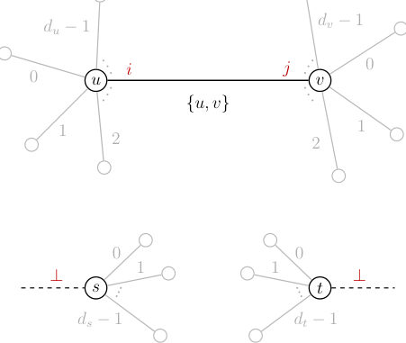
<figcaption class="paper-figure-caption"><b>Fig 1.</b> Figure 1: Local indexing of neighbours in a graph. For an ordinary edge {u, v}, the same edge has two local indices: i at u and j at v, meaning that fu(i) = v and fv(j) = u; and iu,v = i and iv,u = j. The gray edges indicate the other incident edges, whose indices range from 0 to du −1 at u, and from 0 to dv −1 at v, excluding i and j correspondingly. For a boundary vertex b ∈{s, t}, the ordinary graph edges are indexed by 0, . . . , db −1, while the dashed boundary edge has the special index ⊥.</figcaption>
</figure>
<figure class="paper-figure-card">
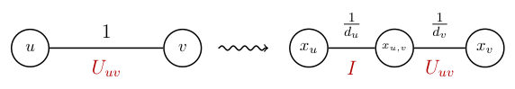
<figcaption class="paper-figure-caption"><b>Fig 2.</b> Figure 2: The Metropolis-Hastings construction for an edge {u, v} such that u &lt; v. The original edge of weight 1 and unitary label Uuv is replaced by two edges through a new vertex xu,v. The edge {xu, xu,v} has weight 1/du and unitary label I, while the edge {xu,v, xv} has weight 1/dv and unitary label Uuv.</figcaption>
</figure>
<figure class="paper-figure-card">

<figcaption class="paper-figure-caption"><b>Fig 3.</b> Figure 3: The st-transport instance used in the lower bound. The graph is the unweighted path v0, v1, . . . , vn, with s = v0 and t = vn. For every i ∈{0, . . . , n −1}, the edge {vi, vi+1} is labeled by the unitary Xxi. Thus, transporting the state |0⟩from s to t applies X Ln−1 i=0 xi.</figcaption>
</figure>
</div>

<p><strong>Summary.</strong> This paper develops a quantum algorithm to solve the $st$-transport problem on graphs whose edges carry unitary quantum operations, provided these operations form a 'flat connection.' The algorithm achieves near-optimal time complexity, and the authors prove an $\Omega(n)$ quantum query lower bound, confirming its efficiency for simulating quantum transport phenomena.</p>
<p><strong>Why it may be interesting.</strong> This work provides a quantum algorithmic framework for simulating physical processes modeled by gauge theories (like lattice gauge theory) on quantum computers, connecting quantum complexity theory to fundamental physics structures.</p>
<details>
<summary>Detailed structure</summary>
<p><strong>Main problem.</strong> The paper addresses the $st$-transport problem on graphs where edges are labeled by unitary quantum operations, requiring the determination of connectivity and the estimation of the state overlap between source and target states.</p>
<p><strong>Main result.</strong> A bounded-error quantum algorithm for $st$-transport is developed with time complexity $\widetilde{O}(n/\varepsilon)$ and space complexity $O(\log n + \log k + \log(1/\varepsilon))$.</p>
<p><strong>Method.</strong> The algorithm utilizes quantum transducers and extends the Metropolis-Hastings reweighting technique from classical $st$-connectivity problems to the unitary-labeled setting.</p>
<p><strong>Model / system.</strong> The model is an undirected graph $G=(V,E)$ where each edge $\{u,v\}$ is labeled by a unitary $U_{uv} \in \mathbb{C}^{k 	imes k}$. The crucial assumption is that these labels form a 'flat connection,' meaning path products are path-independent.</p>
<p><strong>Key observables.</strong> The primary observable is the squared overlap $|\langle\psi_t|U_{s 	o t}|\psi_s
angle|^2$, which quantifies the fidelity of state transport from $s$ to $t$.</p>
<p><strong>Important parameters / regimes.</strong> Key parameters include $n$ (number of vertices), $k$ (dimension of the unitaries), and $\varepsilon$ (the required additive error for the overlap estimation).</p>
<p><strong>Assumptions / limitations.</strong> The analysis critically relies on the assumption that the edge labels define a flat connection (pure gauge).</p>
<p><strong>Figures summary.</strong> One figure illustrates the $st$-transport instance on an unweighted path graph, where edge labels are unitaries $X_{x_i}$ designed to encode a parity check, demonstrating the $\Omega(n)$ lower bound.</p>
<p><strong>Paper structure.</strong> The paper first defines the $st$-transport problem on unitary-labeled graphs under the flatness assumption. It then presents the quantum algorithm using transducers and Metropolis-Hastings reweighting to achieve an upper bound. Finally, it establishes an $\Omega(n)$ quantum query lower bound by reducing the parity problem to this transport problem.</p>
</details>
<details>
<summary>Abstract</summary>
<p>We study a generalization of undirected $st$-connectivity to graphs whose edges carry quantum operations. Let $G=(V,E)$ be an undirected graph on $n$ vertices in which each edge $\{u,v\}$ is labeled by a unitary $U_{uv}\in\mathbb{C}^{k\times k}$, with $U_{vu}=U_{uv}^\dagger$. We assume the labels form a \emph{flat} connection: the ordered product of labels along any path between a pair of vertices $u$ and $v$ is independent of the path. Equivalently, the connection is pure gauge, i.e., gauge-equivalent to the trivial connection; such graphs are exactly the consistent connection graphs of spectral graph theory and the noiseless instances of group synchronization. Consequently, whenever $s$ and $t$ are connected, transporting a state from $s$ to $t$ defines a unique unitary $U_s(t)$. Given states $|ψ_s\rangle,|ψ_t\rangle\in\mathbb{C}^k$ and an oracle that returns the neighbours of a vertex while coherently applying the corresponding edge unitaries, the \emph{$st$-transport problem} is to decide whether $s$ and $t$ are connected and, if so, to estimate the squared overlap between $U_s(t)|ψ_s\rangle$ and $|ψ_t\rangle$ to additive error $\varepsilon$. When $k=1$ and all labels are trivial, this is exactly undirected $st$-connectivity. We give a bounded-error quantum algorithm for $st$-transport that runs in time $\widetilde{O}(n/\varepsilon)$ and uses $O(\log n+\log k+\log(1/\varepsilon))$ space. We do this by designing a transducer and applying a Metropolis-Hastings reweighting to the input graph. We also prove an $Ω(n)$ quantum query lower bound that holds even when $s$ and $t$ are promised to be connected, so for constant $\varepsilon$ our algorithm is optimal up to polylogarithmic factors.</p>
</details>
<p><sub><a href="#top">↑ back to top</a></sub></p>

<p><a id="paper-2609.39126"></a></p>
<h3 id="an-uncertainty-principle-for-entanglement"><a href="http://arxiv.org/abs/2609.39126v1">An uncertainty principle for entanglement</a></h3>
<p><strong>Authors:</strong> Mitali Nanda, Daochen Wang<br>
<strong>Type:</strong> theory · <strong>Category:</strong> quantum information and computing · <strong>PDF:</strong> <a href="https://arxiv.org/pdf/2609.39126v1">https://arxiv.org/pdf/2609.39126v1</a><br>
<strong>Analysis basis:</strong> full PDF text, analyzed in chunks
<strong>Topic relevance:</strong> <code>analog quantum simulation</code> <strong>3/5</strong> · <code>quantum measurements</code> <strong>1/5</strong></p>
<div class="figure-strip-hint">↔ Scroll figures horizontally</div>
<div class="paper-figures-scroll">
<figure class="paper-figure-card">
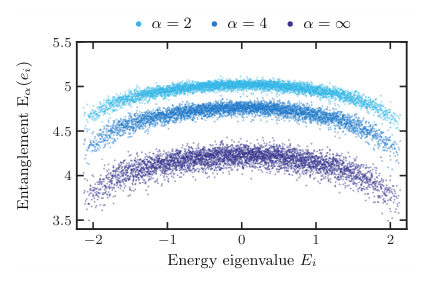
<figcaption class="paper-figure-caption"><b>Fig 1.</b> FIG. 1. Eigenstate entanglement R´enyi entropies versus en- ergy for the 24-mode HSYK 4 across a 12:12 bipartition.</figcaption>
</figure>
<figure class="paper-figure-card">
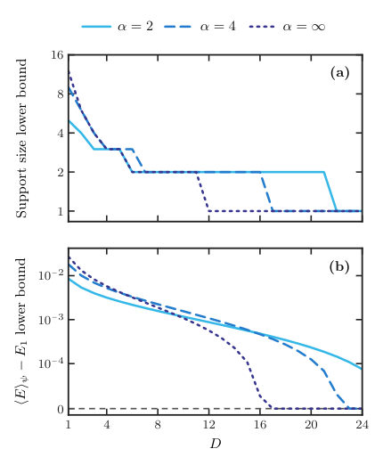
<figcaption class="paper-figure-caption"><b>Fig 2.</b> FIG. 2. Derived constraints on a state |ψ⟩with E(ψ) ≤log D in representing the ground state of HSYK 4 . (a) Lower bound on the number of energy eigenstates |ψ⟩is supported on, via Eq. (16). (b) Lower bound on the gap between the expected energy of |ψ⟩and the true ground state energy E1 = −2.127 . . . , via Eq. (17).</figcaption>
</figure>
</div>

<p><strong>Summary.</strong> This paper introduces a quantitative uncertainty principle for entanglement, bounding the sum of Shannon entropies in two different bases by the difference in entanglement Rényi entropies. This result has a direct physical implication, showing that weakly-entangled states cannot perfectly represent the ground states of systems whose energy eigenstates are highly entangled, demonstrated using the SYK model.</p>
<p><strong>Why it may be interesting.</strong> It provides a fundamental mathematical constraint linking entanglement structure (basis localization) to energy structure (eigenbasis uncertainty), which is crucial for understanding quantum simulation and ground state preparation.</p>
<details>
<summary>Detailed structure</summary>
<p><strong>Main problem.</strong> The paper establishes a quantitative uncertainty principle for entanglement, generalizing known principles from position/momentum measurements.</p>
<p><strong>Main result.</strong> It derives a lower bound on the sum of Shannon entropies of a state's coefficients in two orthonormal bases, relating it to the difference between the entanglement Rényi entropies of the basis states.</p>
<p><strong>Method.</strong> The proof relies on establishing new lower and upper bounds on the entanglement of superpositions, utilizing functional analysis tools like Schatten norms and interpolation theorems.</p>
<p><strong>Model / system.</strong> The primary application is to the Sachdev-Ye-Kitaev (SYK) model, which is used to illustrate how the uncertainty principle limits the ability of weakly-entangled states to represent ground states of Hamiltonians with strongly-entangled energy eigenstates.</p>
<p><strong>Key observables.</strong> Shannon entropies of coefficient distributions ($H(p)$), Entanglement Rényi entropies ($E_\gamma(\psi)$), and the energy gap/expected energy ($\langle E 
angle_\psi$).</p>
<p><strong>Important parameters / regimes.</strong> The parameters $\alpha \in (1, \infty]$ and $eta \in [1/2, 1)$ govern the specific form of the inequality.</p>
<p><strong>Assumptions / limitations.</strong> The analysis often approximates the state $|\psi
angle$ as either a Matrix Product State (MPS) or a Configuration Interaction State (CIS) for practical bounds.</p>
<p><strong>Figures summary.</strong> Figure 1 plots the eigenstate entanglement Rényi entropies versus energy for the SYK model. Figure 2 plots derived lower bounds for the support size and the energy gap for various $\alpha$ values.</p>
<p><strong>Paper structure.</strong> The paper first establishes the general uncertainty principle using mathematical tools, followed by an application section where the principle is used to constrain the representation of ground states in the SYK model.</p>
</details>
<details>
<summary>Abstract</summary>
<p>Consider two orthonormal bases of a bipartite Hilbert space such that states in one basis are weakly entangled and states in the other are strongly entangled. We establish a quantitative version of the following uncertainty principle: every state that is localized in one basis must be delocalized in the other. More specifically, we lower bound the sum of the Shannon entropies of any state's coefficient distributions in the two bases by the difference between the entanglement Rényi entropies of their basis states. The result follows from new lower and upper bounds on the entanglement of superpositions that may be of independent interest. As an application, our result limits the power of weakly-entangled states in representing ground states of Hamiltonians with strongly-entangled energy eigenstates. We illustrate this application numerically for the Sachdev-Ye-Kitaev model.</p>
</details>
<p><sub><a href="#top">↑ back to top</a></sub></p>

<p><a id="paper-2609.38513"></a></p>
<h3 id="copy-scarce-learning-of-ground-states"><a href="http://arxiv.org/abs/2609.38513v1">Copy-scarce learning of ground states</a></h3>
<p><strong>Authors:</strong> Kaito Wada, Nobuyuki Yoshioka<br>
<strong>Type:</strong> theory · <strong>Category:</strong> quantum information and computing · <strong>PDF:</strong> <a href="https://arxiv.org/pdf/2609.38513v1">https://arxiv.org/pdf/2609.38513v1</a><br>
<strong>Analysis basis:</strong> full PDF text, analyzed in chunks
<strong>Topic relevance:</strong> <code>quantum measurements</code> <strong>3/5</strong> · <code>analog quantum simulation</code> <strong>1/5</strong></p>
<div class="figure-strip-hint">↔ Scroll figures horizontally</div>
<div class="paper-figures-scroll">
<figure class="paper-figure-card">
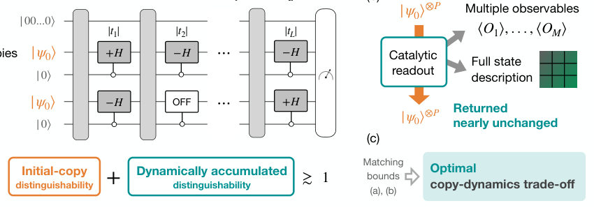
<figcaption class="paper-figure-caption"><b>Fig 1.</b> FIG. 1. Optimal copy–dynamics trade-off with catalytic return. (a) The circuit represents a general measurement protocol under our access model. P copies of the unique ground state |ψ0⟩of a Hamiltonian H are prepared before readout. During each interval |tℓ|, each system may independently undergo controlled forward (+H), backward (−H), or no Hamiltonian evolution (OFF). Grey vertical boxes represent arbitrary H-independent operations, including joint and adaptive processing; all supplied copies may be consumed. The readout cost is the elapsed Hamiltonian time T = PL ℓ=1 |tℓ|. The inequality below the circuit requires the initial-copy and dynamically accumulated contributions to jointly...</figcaption>
</figure>
<figure class="paper-figure-card">
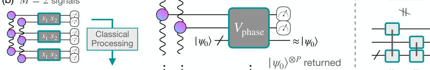
<figcaption class="paper-figure-caption"><b>Fig 2.</b> FIG. 2. Catalytic parallel multi-signal readout. (a) Standard entanglement-enhanced sensing with one signal. The boxes apply Sτx := diag(1, eiτx) in parallel to the qubits of a distributed P-qubit GHZ state, producing the amplified collective phase Pτx in Eq. (4). (b) Multi-signal extension (M = 2 shown). The P devices share M GHZ states, one per signal, which simultaneously acquire the collective phases Pτxj. Single-qubit measurements over several trials at different τ values, followed by efficient classical post-processing of the measurement data, resolve phase periodicity and yield simultaneous signal estimates; we further develop its nearly unbiased version. (c) Catalytic implementation...</figcaption>
</figure>
<figure class="paper-figure-card">
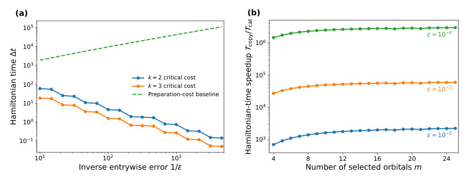
<figcaption class="paper-figure-caption"><b>Fig 3.</b> FIG. 3. End-to-end catalytic-readout advantage in selected-orbital RDM learning. We provide numerical Hamiltonian-time estimates for learning selected-orbital k-RDM of a gapped ground state on N = 200 fermionic modes with to- tal particle number η = 100, compared with particle-number-preserving orbital-rotation shadows [42, 43]. (a) Critical one-copy preparation cost ∆tcrit in Eq. (7) for the full 2- and 3-RDMs of m = 20 selected modes (solid curves with markers), versus the inverse additive error 1/ε for each complex RDM entry. The dashed curve shows the very optimistic preparation-cost baseline ∆tprep described in the main text. Catalytic readout is favorable when this baseline lies above...</figcaption>
</figure>
<figure class="paper-figure-card">
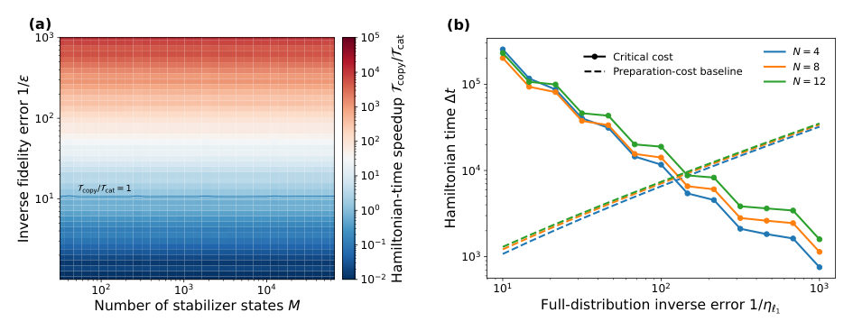
<figcaption class="paper-figure-caption"><b>Fig 4.</b> FIG. 4. Precision-dependent crossovers between copy-consuming protocols and catalytic readout. (a) Stabilizer- state fidelity prediction on N = 100 qubits. Color shows the end-to-end elapsed Hamiltonian-time ratio Tcopy/Tcat for simulta- neously estimating the fidelities with M random stabilizer states, relative to global-Clifford classical shadows [1], as a function of catalog size M and inverse additive-error 1/ε. Catalytic readout is faster when the ratios above one, whereas ratios below one make the copy-consuming approach favorable; the line represents the ratio one. (b) Full computational-basis probability distribution learning on N = 4, 8, 12 qubits, versus inverse ℓ1 error 1/ηℓ1....</figcaption>
</figure>
<figure class="paper-figure-card">
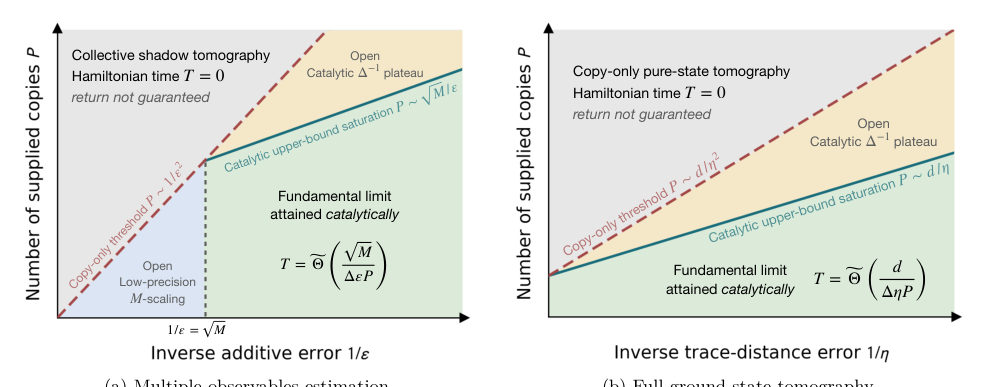
<figcaption class="paper-figure-caption"><b>Fig 5.</b> FIG. 5. Copy–dynamics landscape for ground-state learning. Our catalytic protocols are available for all regions and return all supplied copies nearly unchanged. Green regions indicate where our catalytic readout matches lower bounds for arbitrary protocols, including those that may consume all supplied copies, up to poly-logarithmic factors. Beige regions denote the unmatched catalytic 1/∆plateau from our catalytic upper bounds, and blue region denotes the unmatched M-scaling in the low-precision estimation. Gray regions represent the conventional copy-only protocols: no elapsed Hamiltonian time is required, but catalytic return is not necessarily guaranteed. (a) Multiple observables...</figcaption>
</figure>
</div>

<p><strong>Summary.</strong> This work establishes optimal resource trade-offs for estimating multiple ground-state observables in copy-scarce regimes. By developing catalytic readout protocols, the authors achieve near-optimal measurement accuracy while crucially returning the initial quantum copies nearly unchanged. This advances the understanding of quantum resource management in quantum sensing and characterization.</p>
<p><strong>Why it may be interesting.</strong> The focus on resource trade-offs (copies vs. time) and the development of catalytic protocols that preserve quantum resources are highly relevant to quantum computation and quantum metrology.</p>
<details>
<summary>Detailed structure</summary>
<p><strong>Main problem.</strong> The paper addresses the challenge of estimating multiple ground-state observables when conventional readout methods are too costly due to the need for many independent copies.</p>
<p><strong>Main result.</strong> They derive a unifying inequality and construct catalytic readout protocols that achieve near-optimal trade-offs between initial copies and evolution time while returning the initial copies nearly unchanged.</p>
<p><strong>Method.</strong> The approach involves deriving lower bounds via a static–dynamic distinguishability inequality and constructing parallel catalytic readout protocols utilizing controlled Hamiltonian evolution.</p>
<p><strong>Model / system.</strong> The analysis focuses on a quantum system with a unique, gapped ground state $|\psi_0
angle$ governed by a Hamiltonian $H$. The task is estimating expectation values $\mu_j = \langle\psi_0|O_j|\psi_0
angle$ for multiple observables $O_j$.</p>
<p><strong>Key observables.</strong> Expectation values of multiple observables ($\mu_j$), the number of initial copies ($P$), and the elapsed Hamiltonian time ($T$).</p>
<p><strong>Important parameters / regimes.</strong> The spectral gap ($\Delta$) of the Hamiltonian, the desired error ($\epsilon$), and the number of observables ($M$).</p>
<p><strong>Assumptions / limitations.</strong> The analysis assumes the existence of a unique gapped ground state and controlled access to Hamiltonian evolution $e^{-itH}$.</p>
<p><strong>Figures summary.</strong> Figure 1 illustrates the optimal copy–dynamics trade-off with catalytic return, showing the general measurement circuit and the return of copies. Figure 2 details the readout process, including the joint phase-kickback mechanism for multi-signal extension.</p>
<p><strong>Paper structure.</strong> The paper establishes the core problem, derives the fundamental lower bound inequality, constructs the catalytic readout protocols achieving the bound, and concludes with numerical benchmarks comparing the new method to specialized, copy-consuming protocols.</p>
</details>
<details>
<summary>Abstract</summary>
<p>Probing multiple properties of ground states is central to understanding quantum matter, yet conventional readout can be prohibitively costly because it consumes many independently prepared copies. Here, in copy-scarce regimes, we establish optimal trade-offs between the number of initial ground-state copies and elapsed Hamiltonian-evolution time required for estimating multiple observables or reconstructing a full classical description of a unique gapped ground state. We derive a unifying inequality that quantifies how well ground states can be distinguished using initial copies and controlled dynamics, even when all copies may be consumed. It yields worst-case lower bounds on elapsed Hamiltonian time that any protocol must incur to perform either task. We construct parallel catalytic readouts that return all initial copies nearly unchanged while attaining these bounds up to poly-logarithmic factors. Our protocols require no coherent preparation circuit or its inverse, and their elapsed Hamiltonian time depends only logarithmically on the inverse of the desired return error. Thus, optimal copy--dynamics trade-offs can be attained together with catalytic return. Numerical benchmarks further show substantial reductions in end-to-end elapsed Hamiltonian time relative to a task-specialized copy-consuming protocol, even under an optimistic preparation-cost model. Our results reveal a copy--dynamics resource landscape connecting copy-scarce learning to copy-only endpoints realized by known protocols for shadow tomography and pure-state tomography.</p>
</details>
<p><sub><a href="#top">↑ back to top</a></sub></p>

<p><a id="paper-2609.38804"></a></p>
<h3 id="entangling-atomic-quantum-memories-using-high-order-modulated-coherent-states"><a href="http://arxiv.org/abs/2609.38804v1">Entangling Atomic Quantum Memories Using High-Order Modulated Coherent States</a></h3>
<p><strong>Authors:</strong> Chaohan Cui, Prajit Dhara, Saikat Guha<br>
<strong>Type:</strong> theory · <strong>Category:</strong> quantum information and computing · <strong>PDF:</strong> <a href="https://arxiv.org/pdf/2609.38804v1">https://arxiv.org/pdf/2609.38804v1</a><br>
<strong>Analysis basis:</strong> full PDF text, analyzed in chunks
<strong>Topic relevance:</strong> <code>quantum measurements</code> <strong>3/5</strong> · <code>interference shaping light</code> <strong>1/5</strong></p>
<div class="figure-strip-hint">↔ Scroll figures horizontally</div>
<div class="paper-figures-scroll">
<figure class="paper-figure-card">
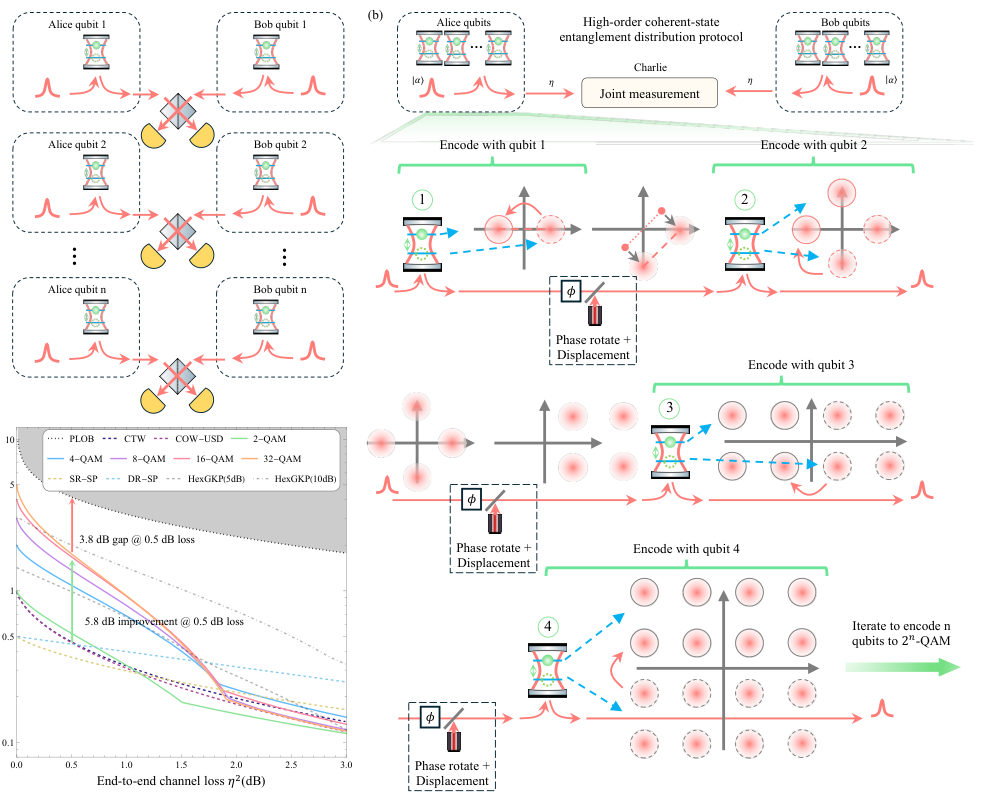
<figcaption class="paper-figure-caption"><b>Fig 1.</b> FIG. 1. Overview and achievable rates. (a) Conventional pairwise midpoint entanglement generation targets one remote Bell pair per elementary attempt. (b) Proposed M-QAM protocol: repeated cavity interactions map a q = log2 M qubit register onto an M-point coherent-state alphabet in one optical mode at each end node, followed by a collective two-mode measurement at Charlie. Each half-link has transmissivity η, so the end-to-end transmissivity is T = η2 and the end-to-end loss is Lch = −10 log10 T. (c) Achievable hashing-bound rate per network mode use after optimizing the QAM spacing d. “PLOB” denotes Q2(η) = −log2(1 −η), the two-way-assisted pure-loss capacity of one half-link and hence...</figcaption>
</figure>
<figure class="paper-figure-card">
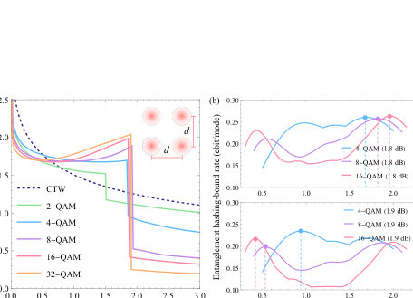
<figcaption class="paper-figure-caption"><b>Fig 2.</b> FIG. 2. Optimization of the QAM spacing. (a) Globally se- lected grid-search optimum d versus end-to-end loss Lch for several QAM orders; the CTW optimum is shown for refer- ence. (b) Achievable hashing-bound rate versus d for 4-, 8-, and 16-QAM at Lch = 1.8 and 1.9 dB. Filled markers and dashed vertical lines identify the selected maxima. The com- peting local maxima cause the branch switches in panel (a).</figcaption>
</figure>
<figure class="paper-figure-card">
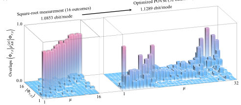
<figcaption class="paper-figure-caption"><b>Fig 3.</b> FIG. 4. Receiver-design headroom. (a) Rate difference ∆R = R −R∗between the full-state SRM-inspired receiver and the vacuum-omitting receiver after optimizing d. (b) Cor- responding optimum d for the vacuum-omitting receiver. (c) For 4-QAM at Lch = 0.5 dB, overlaps ⟨Φr,s|ρ(µ) AB|Φr,s⟩for the 16-outcome SRM-inspired receiver and the 32-outcome vari- ational POVM. The latter reaches 1.1289 versus 1.0853 ebits per network mode use; its pronounced asymmetry illustrates the nontrivial POVM-design landscape.</figcaption>
</figure>
<figure class="paper-figure-card">
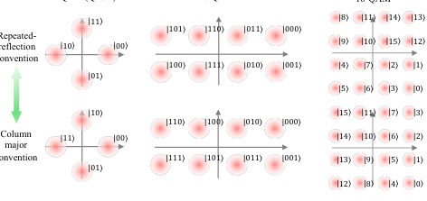
<figcaption class="paper-figure-caption"><b>Fig 4.</b> FIG. 5. Repeated-reflection (RR, top) and column-major (CM, bottom) labelings of the same 4-, 8-, and 16-QAM con- stellations. A local permutation of the memory-register basis maps one convention to the other. The 16-QAM labels are shown in decimal notation.</figcaption>
</figure>
</div>

<p><strong>Summary.</strong> This work proposes using high-order Quadrature Amplitude Modulation (QAM) on optical modes to significantly boost the rate of entanglement distribution between quantum memories. By optimizing the measurement scheme (POVM), the authors demonstrate that this approach surpasses conventional single-qubit protocols, paving the way for scalable quantum networking architectures.</p>
<p><strong>Why it may be interesting.</strong> It provides concrete, quantitative results on scaling entanglement distribution beyond simple single-photon protocols by leveraging high-dimensional coherent state modulation, which is crucial for scaling quantum networks.</p>
<details>
<summary>Detailed structure</summary>
<p><strong>Main problem.</strong> The paper addresses the challenge of distributing high-rate, high-fidelity entanglement between distant quantum memories using optical interconnects.</p>
<p><strong>Main result.</strong> A high-order M-QAM modulation scheme, implemented with an SRM-inspired receiver, can distribute multiqubit entanglement, achieving rates significantly higher than single-qubit-per-mode protocols.</p>
<p><strong>Method.</strong> The authors model the entanglement distribution using a collective midpoint POVM optimized for distillable entanglement, comparing the achievable rate against theoretical capacity bounds.</p>
<p><strong>Model / system.</strong> The system involves reflective cavity-coupled atomic quantum memories (Alice and Bob) communicating via optical modes to a central receiver (Charlie). The protocol maps a q-qubit register onto an M=2^q QAM alphabet.</p>
<p><strong>Key observables.</strong> Distillable entanglement rate (ebits/mode), achievable rate vs. loss, and the improvement factor over single-photon baselines.</p>
<p><strong>Important parameters / regimes.</strong> End-to-end channel loss (L_ch), QAM order (M=2^q), and systematic conditional-phase error ($\delta\phi$).</p>
<p><strong>Assumptions / limitations.</strong> The analysis relies on constructing an explicit achievable receiver (SRM-inspired) and assumes the use of a strongly coupled reflective-cavity qubit–photon interface.</p>
<p><strong>Figures summary.</strong> Figures compare entanglement generation rates across different modulation orders and losses, illustrate the optimization of QAM spacing versus loss, and compare the performance of different receiver designs (SRM vs. variational POVM).</p>
<p><strong>Paper structure.</strong> The paper builds from defining the physical setup and the entanglement objective (maximizing distillable entanglement) to developing the mathematical framework using M-QAM states, deriving the achievable rate via the SRM-inspired POVM, and finally comparing this rate against theoretical benchmarks and alternative measurement strategies.</p>
</details>
<details>
<summary>Abstract</summary>
<p>High-order coherent-state modulation with reflective cavity-coupled atomic memories can distribute multiple heralded ebits per transmitted optical mode, but requires a collective midpoint POVM optimized for maximum distillable entanglement rather than minimum-error state discrimination. An SRM-inspired 16-QAM receiver reaches $1.75$ ebits per mode at $0.5$~dB end-to-end loss, $3.8$~dB below the half-link capacity benchmark. For 4-QAM, a variational POVM with more outcomes than constellation points improves the SRM rate by $4.0\%$ yet remains below capacity, revealing measurement-design headroom. The advantage over single-qubit-per-mode midpoint protocols persists for per-interface loss $<0.2$~dB and calibrated phase error $<0.2π$.</p>
</details>
<p><sub><a href="#top">↑ back to top</a></sub></p>

<p><a id="paper-2609.38775"></a></p>
<h3 id="experimentally-testable-quantum-advantage-in-shallow-circuits"><a href="http://arxiv.org/abs/2609.38775v1">Experimentally Testable Quantum Advantage in Shallow Circuits</a></h3>
<p><strong>Authors:</strong> Kishor Bharti, Adán Cabello<br>
<strong>Type:</strong> both · <strong>Category:</strong> quantum information and computing · <strong>PDF:</strong> <a href="https://arxiv.org/pdf/2609.38775v1">https://arxiv.org/pdf/2609.38775v1</a><br>
<strong>Analysis basis:</strong> full PDF text, analyzed in chunks
<strong>Topic relevance:</strong> <code>QC/QI experiment</code> <strong>3/5</strong> · <code>quantum measurements</code> <strong>1/5</strong></p>
<div class="figure-strip-hint">↔ Scroll figures horizontally</div>
<div class="paper-figures-scroll">
<figure class="paper-figure-card">
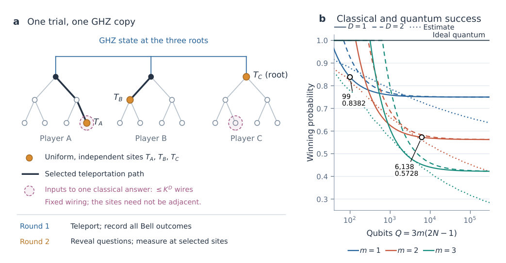
<figcaption class="paper-figure-caption"><b>Fig 1.</b> FIG. 1. (a) One trial for one GHZ copy. Each player’s qubit is teleported through Bell pairs along its host graph to a uniformly random site Tj (orange). The questions are revealed after the Bell outcomes are recorded and are delivered only to those sites. An answer from a depth-D, fan-in-K classical circuit depends on at most KD input wires (purple circles illustrate two possible input locations). (b) Classical threshold Bc from Eq. (2) against the number of qubits Q = 3m(2N −1) for tree hosts, with m = 1, 2, 3 GHZ copies and fan-in K = 2. Solid curves have D = 1; dashed curves have D = 2. The ideal quantum winning probability is one. Circles mark the 99-qubit instance and the m = 2, N =...</figcaption>
</figure>
</div>

<p><strong>Summary.</strong> This work establishes a rigorous, experimentally testable method to prove quantum advantage in shallow quantum circuits by analyzing nonlocal games. It refines classical bounds to show that the classical success probability vanishes rapidly ($O(\log N/N)$) as the number of sites $N$ increases. This provides a clear roadmap for near-term quantum hardware demonstrations.</p>
<p><strong>Why it may be interesting.</strong> It provides concrete, resource-aware protocols for quantum advantage testing, which is crucial for bridging theoretical quantum complexity with near-term experimental hardware capabilities.</p>
<details>
<summary>Detailed structure</summary>
<p><strong>Main problem.</strong> The paper addresses the challenge of experimentally demonstrating quantum advantage using shallow quantum circuits by refining the classical bounds for nonlocal games.</p>
<p><strong>Main result.</strong> They provide an explicit, experimentally testable protocol showing that the classical winning probability decays as $O(\log N/N)$ for large host graphs, while the quantum device wins with certainty.</p>
<p><strong>Method.</strong> The method involves a two-round protocol using quantum teleportation across a host graph of $N$ sites, combined with disjoint-player repetition to suppress classical correlations.</p>
<p><strong>Model / system.</strong> The model is based on testing nonlocal games ($G$) using $m$ disjoint copies played on a host graph of $N$ sites. The quantum advantage is demonstrated by comparing the quantum winning probability (unity) against the derived classical bound.</p>
<p><strong>Key observables.</strong> Classical winning probability ($p_c$), quantum winning probability ($\omega_q$), and the required number of copies ($m$).</p>
<p><strong>Important parameters / regimes.</strong> The depth ($D$) and fan-in ($K$) of the classical response circuit, and the number of sites ($N$) in the host graph.</p>
<p><strong>Assumptions / limitations.</strong> The classical competitor is modeled as a randomized circuit with limited online depth ($D$) and fan-in ($K$), and the quantum implementation is assumed to be ideal (noiseless) for the theoretical bound.</p>
<p><strong>Figures summary.</strong> Figures illustrate the two-round protocol involving teleportation and measurement, and tables list classical thresholds ($B_c$) for various circuit depths ($D$) and qubit numbers ($Q$).</p>
<p><strong>Paper structure.</strong> The paper develops the theoretical framework by refining the classical soundness bound, details the two-round protocol, derives the vanishing classical bound $O(\log N/N)$, and concludes with an explicit proposal for a 99-qubit test.</p>
</details>
<details>
<summary>Abstract</summary>
<p>Experimental tests of shallow-circuit quantum advantage require explicit classical bounds at finite circuit sizes. We refine the finite-size classical soundness bound of Aasnaess's graph-distributed construction to depend linearly on the number of players. Combined with standard disjoint-player repetition, this gives a two-round test on a single processor for any finite nonlocal game with a finite-dimensional perfect quantum strategy and classical winning probability $γ<1$, with arbitrarily small classical success. The method is based on playing $m$ copies with disjoint players and teleporting each player's register to a uniformly random one of $N$ sites before the questions are revealed. Each answer bit of a depth-$D$, fan-in-$K$ classical response with fixed wiring depends on at most $K^D$ question wires, making cross-player dependencies unlikely when $N$ is large. The quantum implementation has constant depth per round and wins with certainty. A classical device wins with probability at most $γ^m+O(mK^D/N)$, which vanishes as $O(\log N/N)$ for $m=\lceil\log_{1/γ}N\rceil$ at fixed $D$ and $K$. We present an explicit proposal for an experimentally testable quantum advantage with 99 qubits.</p>
</details>
<p><sub><a href="#top">↑ back to top</a></sub></p>

<p><a id="paper-2609.38678"></a></p>
<h3 id="exponential-separation-in-sensing-continuous-signals-via-squeezing"><a href="http://arxiv.org/abs/2609.38678v1">Exponential separation in sensing continuous signals via squeezing</a></h3>
<p><strong>Authors:</strong> Francesco Anna Mele, Nadine Meister, Haimeng Zhao, Senrui Chen, Hsin-Yuan Huang<br>
<strong>Type:</strong> theory · <strong>Category:</strong> other · <strong>PDF:</strong> <a href="https://arxiv.org/pdf/2609.38678v1">https://arxiv.org/pdf/2609.38678v1</a><br>
<strong>Analysis basis:</strong> full PDF text, analyzed in chunks
<strong>Topic relevance:</strong> <code>quantum measurements</code> <strong>3/5</strong> · <code>quantum optics experiment</code> <strong>1/5</strong></p>
<div class="figure-strip-hint">↔ Scroll figures horizontally</div>
<div class="paper-figures-scroll">
<figure class="paper-figure-card">
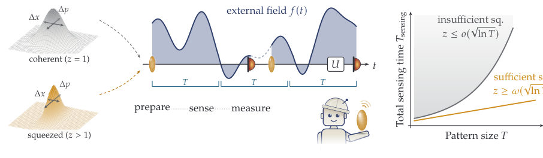
<figcaption class="paper-figure-caption"><b>Fig 1.</b> FIG. 1. (a) Within our single-mode sensing framework, we consider Gaussian sensing protocols with bounded squeezing. These protocols allow the learner to prepare the sensor in single-mode Gaussian states with squeezing at most 𝑧, let the sensor evolve for any choice of time 𝑡while performing arbitrary squeezing-free Gaussian unitaries 𝑈and destructive Gaussian measurements at arbitrary times, and per- form unrestricted classical processing of the measurement outcomes. States with no squeezing have equal uncertainty in both phase quadratures Δ𝑥= Δ𝑝, whereas states with higher squeezing (𝑧&gt; 1) have reduced uncertainty in one of the quadratures. (b) For the sensing problems studied in this...</figcaption>
</figure>
<figure class="paper-figure-card">
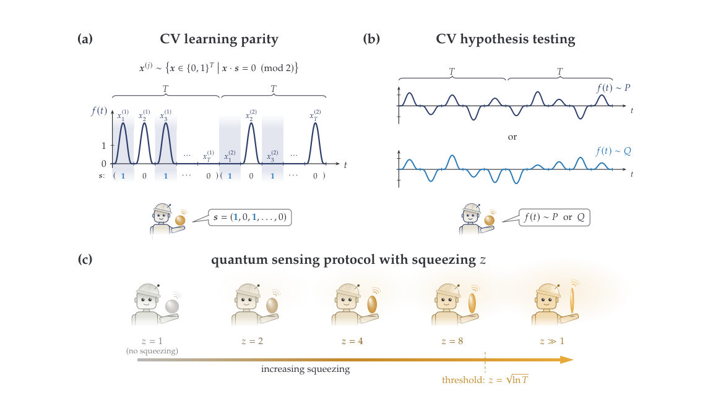
<figcaption class="paper-figure-caption"><b>Fig 2.</b> FIG. 2. The two sensing problems considered in this work are (a) the CV Learning Parity Problem and (b) the CV Hypothesis Testing Problem, whose signals are depicted here. In (a), the coefficients within each block of duration 𝑇form a random bit string x satisfying the parity constraint x · s ≡0 (mod 2), and the goal is to learn s. In (b), the signs of the coefficients within each block are sampled according to one of two distributions, 𝑃or 𝑄, and the goal is to determine which source generates the signal. For both problems, the minimum sensing time scales exponentially in 𝑇for 𝑧= 𝑜( p</figcaption>
</figure>
<figure class="paper-figure-card">
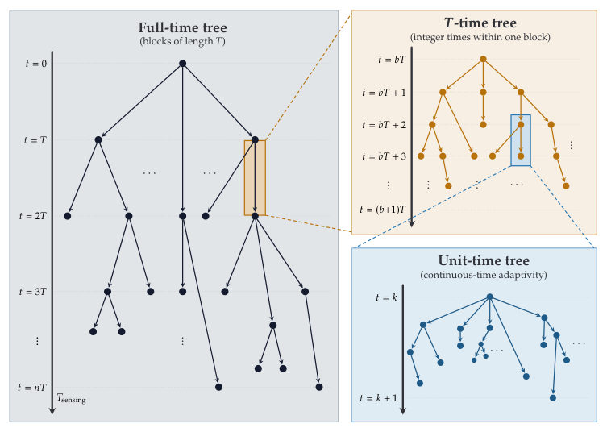
<figcaption class="paper-figure-caption"><b>Fig 3.</b> FIG. 3. Hierarchical tree representation of an adaptive Gaussian sensing protocol. Any such protocol can be reduced to canonical subexperiments that naturally fall into three temporal scales. The full-time tree describes the protocol at the scale of blocks of duration 𝑇, with experiments beginning and ending at multiples of 𝑇and possibly spanning several blocks. A one-block experiment, highlighted in yellow, is resolved by a finer 𝑇-time tree, where experiments begin and end at integer times within the block. A one-unit-time experiment, highlighted in blue, is further resolved by a unit-time tree, which captures the remaining continuous-time adaptivity. The three trees thus describe the...</figcaption>
</figure>
<figure class="paper-figure-card">
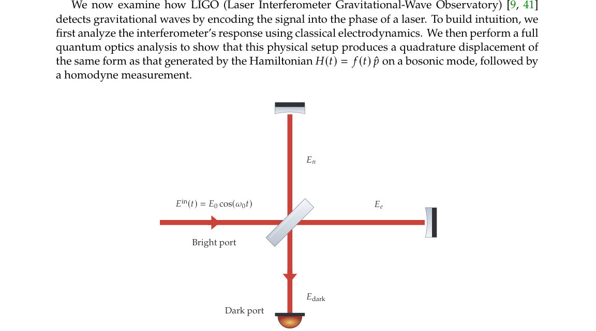
<figcaption class="paper-figure-caption"><b>Fig 4.</b> FIG. 4. Simplified schematic of LIGO as a Michelson interferometer. The laser enters as 𝐸in a beamsplitter and is split into two orthogonal arms (north 𝐸𝑛and east 𝐸𝑒). After traveling to the mirrors at the end and back, the light recombines via the same beamsplitter, and the signal is measured at the dark port. We first show how the gravitational wave signal is detectable in a photodetector in Section D 1 a, and proceed to homodyne detection in Section D 1 b.</figcaption>
</figure>
<figure class="paper-figure-card">
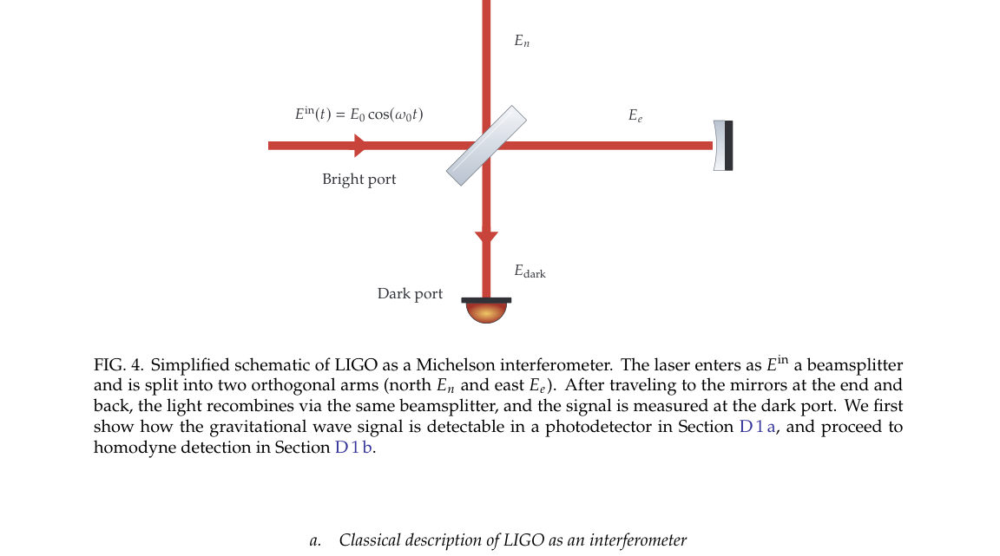
<figcaption class="paper-figure-caption"><b>Fig 5.</b> Figure 4 illustrates a simplified Michelson interferometer, such as the one used in LIGO. A Michelson interferometer splits a laser into two orthogonal arms (north and east) via a beamsplitter, reflects the light off mirrors, and recombines via the same beamsplitter. The signal is read out at the antisymmetric (dark) port via a photodetector. Following the analysis presented in [42], we model the input laser as a classical, monochromatic plane wave with amplitude 𝐸0 and laser</figcaption>
</figure>
</div>

<p><strong>Summary.</strong> This theoretical work quantifies the advantage of quantum squeezing in sensing continuous, time-varying signals. It proves that achieving polynomial sensing time requires the squeezing resource to scale at least as fast as $\omega(\sqrt{\log T})$ relative to the signal pattern size $T$. Below this threshold, the required sensing time explodes exponentially, marking a significant resource-dependent barrier in quantum sensing.</p>
<p><strong>Why it may be interesting.</strong> This work directly addresses the resource scaling in quantum metrology for time-varying signals, providing concrete quantitative thresholds for when simple quantum resources like squeezing provide an exponential advantage over classical or unsqueezed quantum methods.</p>
<details>
<summary>Detailed structure</summary>
<p><strong>Main problem.</strong> The paper establishes a fundamental separation in the required sensing time for continuously evolving quantum signals based on the amount of available quantum squeezing.</p>
<p><strong>Main result.</strong> Sufficient squeezing ($z \geq \omega(\sqrt{\log T})$) allows for polynomial sensing time, whereas insufficient squeezing ($z \leq o(\sqrt{\log T})$) forces the sensing time to scale exponentially with the pattern size $T$.</p>
<p><strong>Method.</strong> The authors analyze the sensing task using Gaussian quantum protocols, comparing the achievable time scaling against theoretical lower bounds derived from information-theoretic arguments.</p>
<p><strong>Model / system.</strong> The system is a single bosonic mode (CV sensor) whose evolution is governed by a time-varying Hamiltonian $\hat{H}(t) = f(t) \hat{p}$, where $f(t)$ represents the unknown, continuously varying signal.</p>
<p><strong>Key observables.</strong> The primary observables are the homodyne measurement outcomes ($   ilde{x}$) and the accumulated counts derived from these measurements, used to distinguish between signal hypotheses.</p>
<p><strong>Important parameters / regimes.</strong> Key parameters include the pattern size $T$, the available squeezing parameter $z$, and the required sensing time $T_{	ext{sensing}}$.</p>
<p><strong>Assumptions / limitations.</strong> The analysis assumes the ability to perform adaptive measurements and controls at arbitrary times, which is crucial for establishing the separation boundary.</p>
<p><strong>Figures summary.</strong> Figures compare the sensing performance for coherent versus squeezed protocols, visually demonstrating the transition from polynomial to exponential time scaling based on the squeezing level relative to $\sqrt{\log T}$.</p>
<p><strong>Paper structure.</strong> The paper develops the problem by first setting up the continuous signal model, then establishing the upper bound using Gaussian sensing protocols, and finally deriving the lower bound by showing that any strategy must overcome the exponential barrier unless sufficient squeezing is present.</p>
</details>
<details>
<summary>Abstract</summary>
<p>Quantum sensing traditionally focuses on using quantum resources such as squeezing and entanglement to improve precision for sensing fixed signals. However, in many applications such as gravitational-wave detection and electromagnetic-field sensing, the signal evolves continuously and varies through time. Additionally, the learner is free to prepare, control, and measure the sensor at arbitrary times, possibly chosen adaptively. In this work, we establish exponential separation in sensing time for continuously evolving signals due to the available squeezing. The signals we study are characterized by a pattern size $T$, and we find that a sensor with squeezing at least $ω(\sqrt{\log T})$ offers a $\mathrm{poly}(T)$ sensing time, whereas those with squeezing at most $o(\sqrt{\log T})$ must use an exponential sensing time in $T$.</p>
</details>
<p><sub><a href="#top">↑ back to top</a></sub></p>

<p><a id="paper-2609.40105"></a></p>
<h3 id="harnessing-problem-structure-for-end-to-end-quantum-speed-ups"><a href="http://arxiv.org/abs/2609.40105v1">Harnessing problem structure for end-to-end quantum speed-ups</a></h3>
<p><strong>Authors:</strong> Qifan Jiang, Xiao-Ming Zhang, Debin Xiang, Xiao Yuan, Liqiang Lu, Jianwei Yin<br>
<strong>Type:</strong> theory · <strong>Category:</strong> quantum information and computing · <strong>PDF:</strong> <a href="https://arxiv.org/pdf/2609.40105v1">https://arxiv.org/pdf/2609.40105v1</a><br>
<strong>Analysis basis:</strong> full PDF text, analyzed in chunks
<strong>Topic relevance:</strong> <code>Rydberg arrays</code> <strong>3/5</strong> · <code>analog quantum simulation</code> <strong>1/5</strong></p>
<div class="figure-strip-hint">↔ Scroll figures horizontally</div>
<div class="paper-figures-scroll">
<figure class="paper-figure-card">
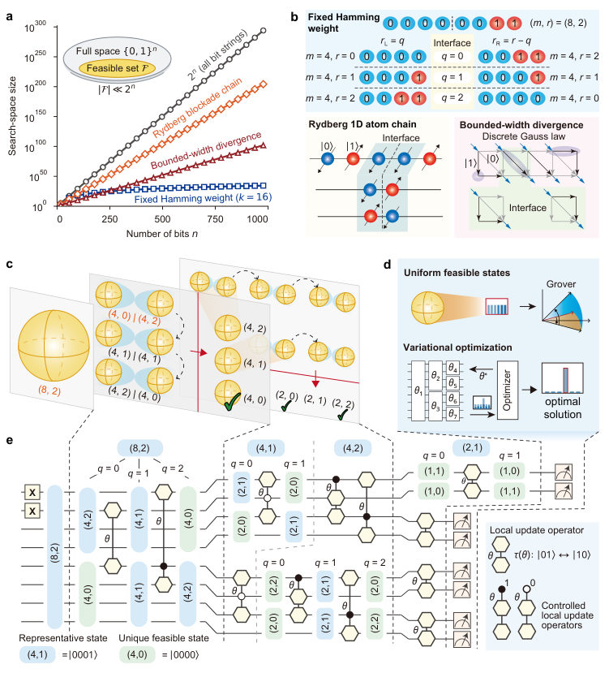
<figcaption class="paper-figure-caption"><b>Fig 1.</b> FIG. 1. Recursive interfaces guide state preparation without enumeration. a, Exact support sizes for the full 𝑛-bit search space, fixed Hamming weight with 𝑘= 16 ones, a Rydberg blockade chain, and the bounded-width divergence ladder used as our benchmark. The structured feasible sets may be exponentially smaller than the full search space. b, An interface stores the information needed to decide whether two child blocks can be joined. For fixed Hamming weight, (𝑚, 𝑟) labels a recursive block containing 𝑚bits and requiring exactly 𝑟ones. A split labeled 𝑞gives child weights 𝑞and 𝑟−𝑞. For a Rydberg blockade chain, compatibility depends on the occupations beside the split. For bounded-width...</figcaption>
</figure>
<figure class="paper-figure-card">
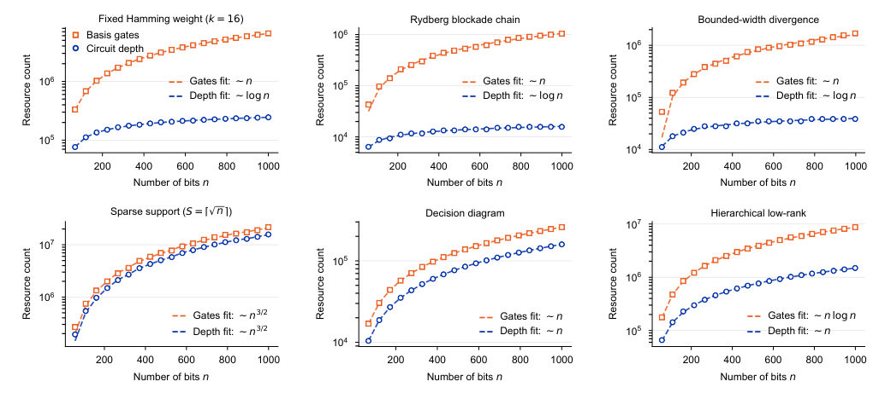
<figcaption class="paper-figure-caption"><b>Fig 2.</b> FIG. 2. Circuit benchmarks are consistent with the analytical resource scalings. Orange squares show gate counts and blue circles show circuit depths after decomposition into the {𝑅𝑧, 𝑆𝑋, 𝑋, CX} basis, where 𝑆𝑋is the square-root-of-𝑋gate. The benchmarks use 𝑘= 16, the bounded-width divergence ladder, 𝑆= ⌈√𝑛⌉, the width-three divisibility-by-three decision diagram and an 𝑟= 2 even-parity Schmidt tree. Dashed curves show least-squares fits using forms fixed by the analytical bounds. The legends display the leading fitted terms, and complete models and coefficients are provided in Source Data.</figcaption>
</figure>
<figure class="paper-figure-card">
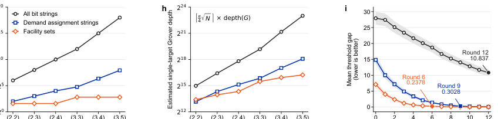
<figcaption class="paper-figure-caption"><b>Fig 3.</b> FIG. 3. Facility-set search reduces the uncapacitated facility location problem (UFLP) search space. a, UFLP with 𝑎facilities and 𝑏 demands. Each demand is assigned to one open facility, and the objective is to minimize total opening and service cost. b, Binary encoding with one opening bit and 𝑏assignment bits per facility, giving 𝑎+ 𝑎𝑏bits. In the displayed basis state, each demand is assigned to one open facility and every open facility is used. c, Grover-style search. 𝐴prepares the search state, 𝑆𝜒marks feasible solutions below the current cost threshold, and 𝐷= 𝐴𝑆0𝐴† performs diffusion, with 𝑆0 the zero-state reflection. Each iteration applies 𝑆𝜒followed by 𝐷, giving 𝐺= 𝐷𝑆𝜒. d,...</figcaption>
</figure>
<figure class="paper-figure-card">
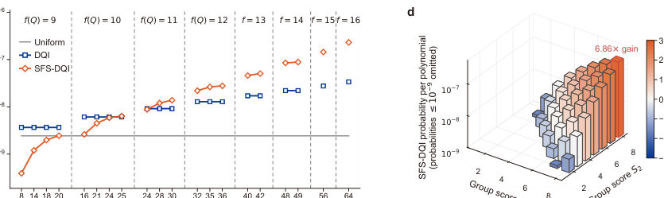
<figcaption class="paper-figure-caption"><b>Fig 4.</b> FIG. 4. Structured initial states favor greater group balance among equal-score polynomials. a, Optimal polynomial intersection (OPI) scores a polynomial 𝑄by the number 𝑓(𝑄) of evaluation constraints it satisfies. The group scores 𝑆1(𝑄) and 𝑆2(𝑄) define 𝐽(𝑄) = 𝑆1(𝑄)𝑆2(𝑄), which measures balance at fixed total score. Standard decoded quantum interferometry (DQI) starts from a weighted superposition of Dicke states. Each Dicke state is uniform over constraint subsets of a fixed size, and the weights define the score-weighting function 𝑃. These weights are chosen to raise the expected score. The circuit produces amplitudes proportional to 𝑃( 𝑓(𝑄)) and therefore cannot distinguish equal-score...</figcaption>
</figure>
</div>

<p><strong>Summary.</strong> This work introduces a novel framework to make quantum speed-ups robust by encoding the inherent structure of real-world problems into quantum circuits. By translating structural information into efficient state preparation, the authors demonstrate that previously lost quantum advantages can be recovered for combinatorial optimization tasks. This establishes problem structure as a quantifiable computational resource for quantum algorithms.</p>
<p><strong>Why it may be interesting.</strong> The explicit use of structured state preparation circuits, particularly those involving Rydberg-blockade chains, directly connects theoretical quantum complexity with physical implementations in AMO platforms.</p>
<details>
<summary>Detailed structure</summary>
<p><strong>Main problem.</strong> To determine if quantum speed-ups persist in real-world applications when the full overhead cost of encoding classical data is accounted for (end-to-end cost accounting).</p>
<p><strong>Main result.</strong> By introducing structure-aware quantum data encoding, the authors show that exploiting the problem's inherent structure can restore quantum speed-ups that were otherwise eliminated by encoding overhead.</p>
<p><strong>Method.</strong> They propose a general, recursive framework that compiles compact recursive descriptions of problem structure directly into efficient state-preparation circuits, reducing encoding complexity.</p>
<p><strong>Model / system.</strong> The framework is applied to combinatorial optimization problems, such as the uncapacitated facility-location problem, and general structured state preparation $|\psi_\pi
angle = \sum_{x \in F} \sqrt{\pi(x)} |x
angle$.</p>
<p><strong>Key observables.</strong> The quantum speed-up factor, the circuit depth, and the gate count scaling relative to the problem structure's expansion dimension $d$.</p>
<p><strong>Important parameters / regimes.</strong> The expansion dimension $d$, which governs the complexity of the structural description; the size of the feasible set $F$.</p>
<p><strong>Assumptions / limitations.</strong> The analysis relies on the strong exponential time hypothesis for proving asymptotic speed-ups, and for some applications, the assumption of non-negative costs is made.</p>
<p><strong>Figures summary.</strong> Figures illustrate the construction of state preparation circuits for various structured sets (e.g., fixed Hamming weight, Rydberg blockade chains) and detail the search space reduction for the UFLP using Grover-style search.</p>
<p><strong>Paper structure.</strong> The paper first establishes the general framework for structure-aware encoding, demonstrating its success on UFLP. It then details the resource scaling for six representative structured data families using a local-update principle. Finally, it extends the concept to incorporate structural preferences into quantum sampling via a grouped Overlap Probability Inference (OPI) approach.</p>
</details>
<details>
<summary>Abstract</summary>
<p>Quantum algorithms can offer substantial computational speed-ups, yet these advantages may disappear once the cost of structure-agnostic classical data encoding is taken into account. Real-world problem instances, however, often possess rich internal structure. This raises a fundamental question: can such structure be harnessed to make quantum speed-ups survive end-to-end cost accounting? Here we show that it can. We introduce a general framework for structure-aware quantum data encoding that compiles compact recursive descriptions of problem structure into efficient state-preparation circuits, translating structural information directly into reduced encoding complexity. For the uncapacitated facility-location problem, structure-agnostic encoding admits a classical dequantization that eliminates the quadratic quantum speed-up, whereas exploiting the underlying problem structure restores this advantage even when state-preparation costs are included. More broadly, the same framework prepares structured quantum states for combinatorial optimization that capture non-trivial relations among constraints, including group balance, conflicts and synergistic rewards, extending previously reported super-polynomial quantum advantages to broader classes of objectives. These results establish exploitable problem structure as a computational resource for quantum algorithms and provide a systematic route towards realizing quantum advantage in data-intensive problems.</p>
</details>
<p><sub><a href="#top">↑ back to top</a></sub></p>

<p><a id="paper-2609.39258"></a></p>
<h3 id="multipartite-entanglement-hidden-in-vector-chiral-correlations-of-spin-12-chains"><a href="http://arxiv.org/abs/2609.39258v1">Multipartite entanglement hidden in vector-chiral correlations of spin-1/2 chains</a></h3>
<p><strong>Authors:</strong> Tokuro Shimokawa<br>
<strong>Type:</strong> theory · <strong>Category:</strong> strongly correlated electrons · <strong>PDF:</strong> <a href="https://arxiv.org/pdf/2609.39258v1">https://arxiv.org/pdf/2609.39258v1</a><br>
<strong>Analysis basis:</strong> full PDF text, analyzed in chunks
<strong>Topic relevance:</strong> <code>analog quantum simulation</code> <strong>3/5</strong> · <code>quantum measurements</code> <strong>1/5</strong></p>
<div class="figure-strip-hint">↔ Scroll figures horizontally</div>
<div class="paper-figures-scroll">
<figure class="paper-figure-card">
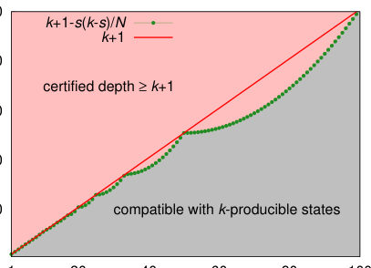
<figcaption class="paper-figure-caption"><b>Fig 1.</b> Figure 1. Multipartite-entanglement threshold for the vector- chirality QFI. The plot shows the rigorous k-producible upper bound for the vector-chirality QFI density at N = 100. The green curve shows the finite-size threshold k+1−s(k−s)/N, with N = qk+s, while the red line shows the simplified bound k + 1. QFI densities above the green threshold certify entanglement depth at least k + 1; the grey region is compatible with k-producible states.</figcaption>
</figure>
<figure class="paper-figure-card">
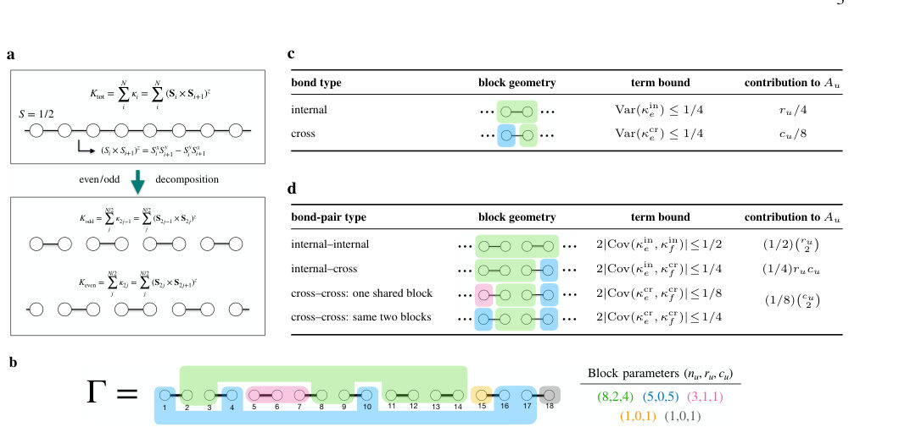
<figcaption class="paper-figure-caption"><b>Fig 2.</b> Figure 2. Structure of the chirality-QFI bound. a, Even–odd decomposition of the total vector-chirality operator Ktot into Kodd and Keven. Each component is a sum of mutually non-overlapping nearest-neighbour chirality bonds. b, Example of a block partition compatible with a k = 9-producible pure state for N = 18, shown relative to the odd matching. Each coloured region denotes one block in the chosen product decomposition and contains at most k sites; sites belonging to the same block need not be spatially contiguous. No genuine multipartite entanglement within an individual block is assumed: the state of a block may itself factorize into smaller subsets. Black solid bonds denote the...</figcaption>
</figure>
<figure class="paper-figure-card">
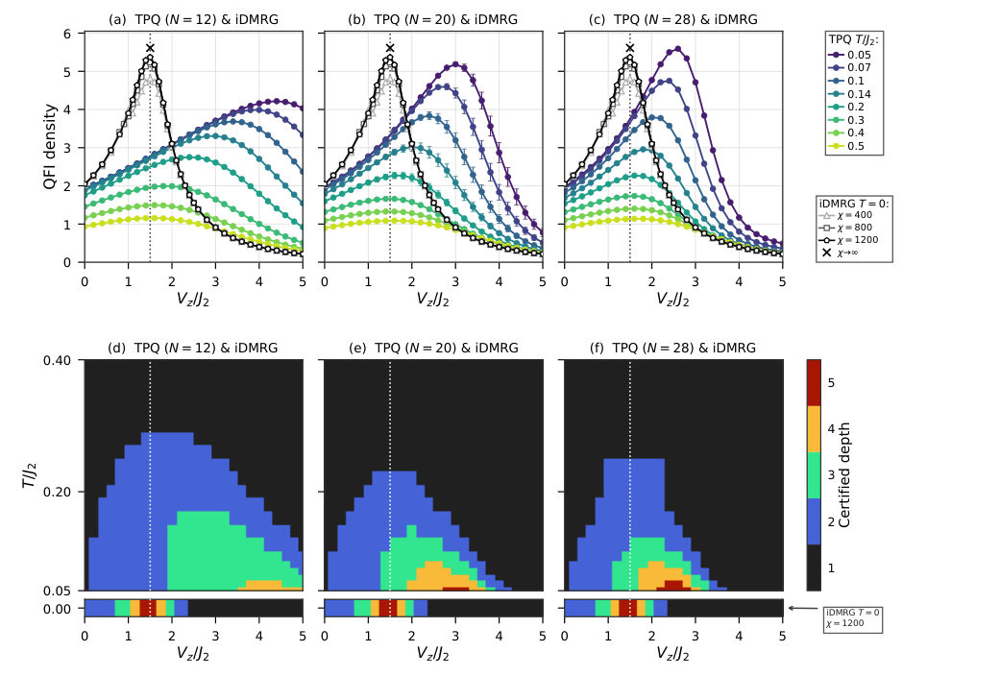
<figcaption class="paper-figure-caption"><b>Fig 3.</b> Figure 3. Zero and finite-temperature chirality-QFI densities f (0) Q (R) and f (T ) Q (N), defined in Eqs. (38) and (41), respectively, obtained</figcaption>
</figure>
<figure class="paper-figure-card">
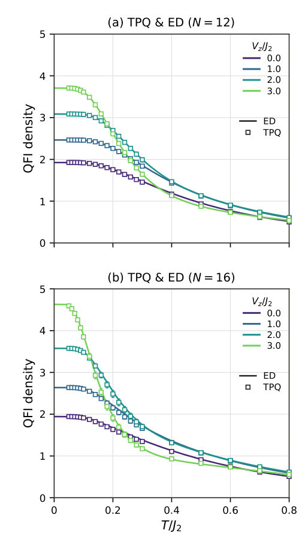
<figcaption class="paper-figure-caption"><b>Fig 4.</b> Figure 4. Temperature dependence of the chirality-QFI density for the periodic chains with (a) N = 12 and (b) N = 16, with J1/J2 = −0.1 and ∆= 0.9, at Vz/J2 = 0.0, 1.0, 2.0, 3.0. Solid lines show ED results from Eq. (214). Square symbols show the ratio-of-sums TPQ estimates in Eq. (212), using 40 independent realizations for N = 12 and 20 for N = 16; error bars indicate one standard error evaluated by jackknife method. The same color denotes the same Vz/J2 for ED and TPQ. The comparison covers 0 ≤T/J2 ≤0.8. ED includes T = 0, whereas the TPQ data start at T/J2 = 0.05.</figcaption>
</figure>
</div>

<p><strong>Summary.</strong> This paper develops a method to quantify multipartite entanglement in quantum spin chains by relating it to the Quantum Fisher Information (QFI) of the vector-chiral correlation. By establishing rigorous upper bounds on this QFI, the authors show that exceeding these bounds certifies a specific depth of entanglement. This provides a powerful, experimentally accessible diagnostic tool for quantum materials research.</p>
<p><strong>Why it may be interesting.</strong> This work bridges the gap between abstract entanglement measures and measurable magnetic responses (dielectric loss), which is highly relevant for experimentalists studying quantum materials and strongly correlated systems.</p>
<details>
<summary>Detailed structure</summary>
<p><strong>Main problem.</strong> The central challenge is characterizing and measuring multipartite entanglement in quantum materials using only experimentally accessible observables.</p>
<p><strong>Main result.</strong> The study demonstrates that multipartite entanglement is encoded in vector-chiral correlations in the $J_1-J_2$ XXZ chain, providing a new diagnostic route via dielectric spectroscopy.</p>
<p><strong>Method.</strong> The authors establish rigorous bounds on the Quantum Fisher Information (QFI) associated with the total nearest-neighbour vector chirality, combining iDMRG and thermal quantum-state calculations.</p>
<p><strong>Model / system.</strong> The system analyzed is a spin-1/2 chain, specifically an extended $J_1-J_2$ XXZ chain, which is relevant to multiferroic magnets. The Hamiltonian includes nearest-neighbor and next-nearest-neighbor interactions.</p>
<p><strong>Key observables.</strong> Vector Chirality ($\kappa_i$), Total Vector Chirality ($K_{tot}$), and the Quantum Fisher Information (QFI) associated with $K_{tot}$.</p>
<p><strong>Important parameters / regimes.</strong> Temperature ($T$), chain length ($N$), and the entanglement depth parameter ($k$).</p>
<p><strong>Assumptions / limitations.</strong> The QFI-based criterion is sufficient but not necessary for multipartite entanglement. The analysis relies on bounding the QFI for $k$-producible states.</p>
<p><strong>Figures summary.</strong> Figure 1 shows the rigorous upper bound for the vector-chirality QFI density. Figure 2 illustrates the structure of the chirality-QFI bound using block partitions.</p>
<p><strong>Paper structure.</strong> The paper first establishes the theoretical bound for the QFI related to vector chirality. It then applies this bound to the $J_1-J_2$ XXZ chain at both zero and finite temperatures, culminating in a comparison with experimental measurement techniques.</p>
</details>
<details>
<summary>Abstract</summary>
<p>Characterizing entanglement in quantum materials through experimentally accessible observables remains a central challenge. Quantum Fisher information associated with sums of one-site spin operators provides one route by linking entanglement to measurable magnetic response functions. Extending this approach to local composite observables requires new entanglement bounds. Here we establish a rigorous bound for the total nearest-neighbour vector chirality of periodic spin-$1/2$ chains with an even number of sites. The quantum Fisher information per spin cannot exceed $k+1$ for any $k$-producible state, so exceeding this bound certifies entanglement depth of at least $k+1$. Combining infinite density-matrix renormalization group and thermal pure quantum-state calculations, we demonstrate multipartite entanglement encoded in vector-chiral correlations at zero and finite temperatures in an extended $J_1$-$J_2$ XXZ chain. The spin-current coupling between vector chirality and electric polarization offers, in principle, access to this witness through dielectric loss spectroscopy in multiferroic magnets, extending entanglement diagnostics beyond dipolar spin correlations.</p>
</details>
<p><sub><a href="#top">↑ back to top</a></sub></p>

<p><a id="paper-2609.39417"></a></p>
<h3 id="qantum-well-resonant-tunneling-diode-probe-of-correlated-states-in-twisted-bilayer-mosmath778math"><a href="http://arxiv.org/abs/2609.39417v1">Qantum Well Resonant Tunneling Diode Probe of Correlated States in Twisted Bilayer MoS$_2$</a></h3>
<p><strong>Authors:</strong> Chengjie Zhou, Jin-Xin Hu, Sihong Xu, Zijing Jin, Hui Li, Kam Tuen Law, Jiannong Wang<br>
<strong>Type:</strong> experiment · <strong>Category:</strong> strongly correlated electrons · <strong>PDF:</strong> <a href="https://arxiv.org/pdf/2609.39417v1">https://arxiv.org/pdf/2609.39417v1</a><br>
<strong>Analysis basis:</strong> full PDF text, analyzed in chunks
<strong>Topic relevance:</strong> <code>analog quantum simulation</code> <strong>3/5</strong> · <code>quantum measurements</code> <strong>1/5</strong></p>
<div class="figure-strip-hint">↔ Scroll figures horizontally</div>
<div class="paper-figures-scroll">
<figure class="paper-figure-card">
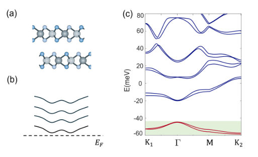
<figcaption class="paper-figure-caption"><b>Fig 1.</b> FIG. 1. (a) Schematic picture of the crystal structure of AB- stacked tMoS2 with 2H-type stacking order. (b) The moir´e bands have nearly four-fold degeneracy including spin and valley. (c) Continuum model calculations. The calculated moir´e band structure (K valley) of 57◦-tMoS2 at displacement field D = 0.1 V/nm.</figcaption>
</figure>
<figure class="paper-figure-card">
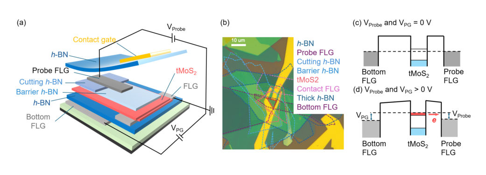
<figcaption class="paper-figure-caption"><b>Fig 2.</b> FIG. 2. (a) Schematic structure of a QWRTD (contact gate/top h-BN/Probe FLG/cutting h-BN/barrier h-BN/tMoS2/contact FLG/bottom h-BN/bottom FLG). The probe bias VProbe is applied between the Probe FLG and tMoS2 (via contact FLG), while the probe-gate voltage VPG is applied between the bottom FLG and tMoS2, together enabling joint control of the tunneling bias and the local displacement field/doping. (b) Optical micrograph of the assembled QWRTD device. Distinct constituent layers are outlined by dashed lines of different colors, with the active tunneling region enclosed by the red dashed contour. (c-d) Schematic band alignment of a QWRTD when VProbe and VPG = 0 V (c), and VProbe and VPG &gt; 0...</figcaption>
</figure>
<figure class="paper-figure-card">
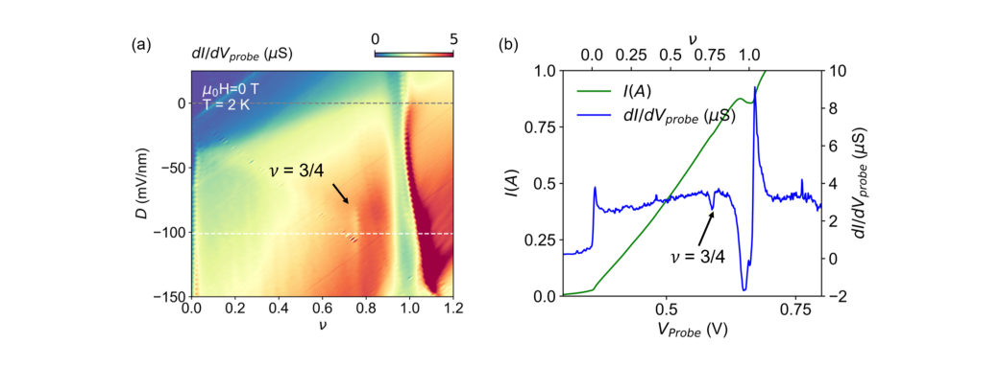
<figcaption class="paper-figure-caption"><b>Fig 3.</b> FIG. 3. (a) Measured differential conductance dI/dVProbe map as a function of filling factor ν and vertical electric displacement field D at T = 2 K and zero magnetic field. A persistent integer insulating state is present at ν = 1 across all D, while a displacement-field-induced fractional insulating state at ν = 3/4 emerges for D &lt; −75 mV/nm (marked by the black arrow). (b) Measured I-VProbe curve (green) and its corresponding dI/dVProbe curve (blue) at fixed D ≈−101.6 mV/nm (white dashed line in (a)); the two valleys at filling ν = 1 and ν = 3/4 represent the integer and fractional insulating states.</figcaption>
</figure>
<figure class="paper-figure-card">
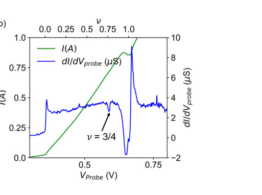
<figcaption class="paper-figure-caption"><b>Fig 4.</b> Fig. 4(a) displays the temperature-dependent dI/dVProbe signal versus filling factor ν for temperatures ranging from 2 K to 100 K (with 2 K increments below 40 K) at a fixed displacement field D = −101.6 mV/nm and zero magnetic field. The insulating state at ν = 1 remains robust up to 100 K, whereas the fractional insulating state at ν = 3/4 vanishes above 12 K (highlighted by the bold curve). Fig. 4(b) plots the thermal degradation of dI/dVProbe at ν = 0.75 (blue) and ν = 0.81 (red). For ν = 0.81, the conductance decreases monotonically with increasing temperature, indicating metallic behavior. Conversely, at ν = 0.75, the conductance initially increases with temperature before declining...</figcaption>
</figure>
<figure class="paper-figure-card">
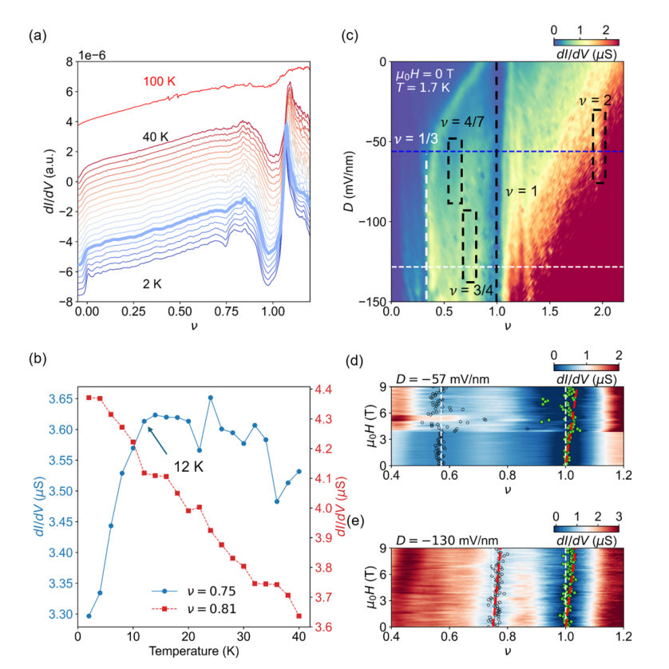
<figcaption class="paper-figure-caption"><b>Fig 5.</b> FIG. 4. (a) dI/dVProbe signal versus filling factor ν as a function of temperature (2–100 K) at D = −101.6 mV/nm. Curves are vertically offset for clarity; the curve at 12 K, above which the ν = 3/4 state disappears, is highlighted in bold. (b) Temperature dependence of the dI/dVProbe signal at ν = 0.75 (blue) and ν = 0.81 (red). (c) dI/dVProbe vs. ν and D for a second ≈56.5◦</figcaption>
</figure>
</div>

<p><strong>Summary.</strong> This paper reports on the use of a novel Quantum Well Resonant Tunneling Diode (QWRTD) to investigate correlated electronic states in twisted bilayer MoS2. The authors experimentally confirm the existence of both integer ($\nu=1$) and fractional ($\nu=3/4$) correlated insulating states. These findings establish the QWRTD as a powerful tool for mapping out the correlated phase diagram in moiré heterostructures.</p>
<p><strong>Why it may be interesting.</strong> This work provides a highly controlled, local experimental realization of strongly correlated physics in 2D van der Waals materials, offering a platform to test theoretical models of Mott and Wigner insulators.</p>
<details>
<summary>Detailed structure</summary>
<p><strong>Main problem.</strong> The study aims to probe emergent quantum phases, specifically strongly correlated insulating states, within moiré superlattices formed in twisted bilayer MoS2.</p>
<p><strong>Main result.</strong> The authors report direct evidence of a robust integer correlated insulating state at filling factor $\nu=1$ and a displacement-field-induced fractional insulating state at $\nu=3/4$, which is characterized as a potential generalized Wigner crystal.</p>
<p><strong>Method.</strong> The research utilizes a novel experimental platform, the Quantum Well Resonant Tunneling Diode (QWRTD), to perform localized, gate-tunable tunneling spectroscopy.</p>
<p><strong>Model / system.</strong> The system is near-AB-stacked twisted bilayer MoS2 forming moiré superlattices. The physics is governed by strong electronic correlations, expected to be in the regime where the on-site Coulomb interaction $U$ is comparable to or larger than the bandwidth $W$.</p>
<p><strong>Key observables.</strong> Differential conductance ($dI/dV_{	ext{Probe}}$) measured as a function of filling factor ($
u$) and displacement field ($D$).</p>
<p><strong>Important parameters / regimes.</strong> Filling factor $\nu$ (e.g., 1, 3/4), displacement field $D$ (e.g., $D < -75 \text{ mV/nm}$), and temperature ($T$).</p>
<p><strong>Assumptions / limitations.</strong> The QWRTD architecture successfully allows for independent, quantitative control over local carrier density and displacement field, bypassing limitations of conventional planar measurements.</p>
<p><strong>Figures summary.</strong> Figures illustrate the moiré band structure, the QWRTD device schematic, and measured $dI/dV_{	ext{Probe}}$ maps confirming the $\nu=1$ and $\nu=3/4$ insulating states, along with temperature dependence measurements.</p>
<p><strong>Paper structure.</strong> The paper introduces the physical system and the QWRTD platform, presents measurements showing the correlated insulating states at $\nu=1$ and $\nu=3/4$ across varying fields, and uses temperature/field dependence to characterize the $\nu=3/4$ state as a generalized Wigner crystal.</p>
</details>
<details>
<summary>Abstract</summary>
<p>Moiré superlattices formed in transition metal dichalcogenides (TMDs) offer a versatile platform for exploring emergent quantum phases arising from strong electronic correlations. In this work, we develop a new experimental platform, the quantum well resonant tunneling diode (QWRTD), to probe the electronic landscape of $\approx 57^\circ$ twisted bilayer MoS$_2$ (tMoS$_2$). By measuring the differential conductance ($dI/dV_{\text{Probe}}$) as a function of filling factor $ν$ and displacement field $D$, we observe a robust integer correlated insulating state at $ν= 1$ that persists across the measured displacement field range. Furthermore, we identify a displacement-field-induced fractional insulating state at $ν= 3/4$ for $D < -75$~mV/nm. Temperature- and magnetic-field-dependent measurements characterize this $ν= 3/4$ state as a potential generalized Wigner crystal. These correlated states are also observed in another device with a similar twist angle ($\approx 56.5^\circ$). Our results provide direct evidence of correlated states in near-AB-stacked tMoS$_2$ and establish QWRTD as a powerful experimental tool for investigating strong correlations and topology in van der Waals heterostructures.</p>
</details>
<p><sub><a href="#top">↑ back to top</a></sub></p>

<p><a id="paper-2609.40339"></a></p>
<h3 id="the-single-copy-quantum-bandit-is-classical-an-exact-spectral-collapse"><a href="http://arxiv.org/abs/2609.40339v1">The Single-Copy Quantum Bandit Is Classical: An Exact Spectral Collapse</a></h3>
<p><strong>Authors:</strong> Siu Hin Ng<br>
<strong>Type:</strong> theory · <strong>Category:</strong> quantum information and computing · <strong>PDF:</strong> <a href="https://arxiv.org/pdf/2609.40339v1">https://arxiv.org/pdf/2609.40339v1</a><br>
<strong>Analysis basis:</strong> full PDF text, analyzed in chunks
<strong>Topic relevance:</strong> <code>quantum measurements</code> <strong>3/5</strong> · <code>Keldysh / 2PI / non-Gaussian methods</code> <strong>1/5</strong></p>
<div class="figure-strip-hint">↔ Scroll figures horizontally</div>
<div class="paper-figures-scroll">
<figure class="paper-figure-card">
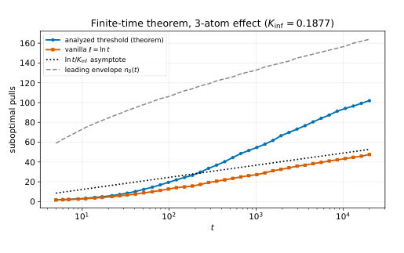
<figcaption class="paper-figure-caption"><b>Fig 1.</b> Fig. 2. Finite-time validation of Theorem 4 on a 3-atom effect f = (1, 0.5, 0), qk⋆= (0.55, 0.30, 0.15), qk = (0.30, 0.30, 0.40) (µ⋆= 0.70, µk = 0.45, Kinf(k) = 0.187744, exceeding kl(µk, µ⋆) = 0.1346 by 40% — the value of the full alphabet over the Bernoulli reduction). In a 100-run simulation (seed 7, horizon T = 2 × 104), the empirical mean count stays below the leading envelope nδ(t) (dashed) at every checkpoint under the analyzed threshold (solid); the lighter, unanalyzed threshold ℓ= ln t climbs toward the predicted constant 1/Kinf = 5.33 from below, illustrating the finite-time slack without establishing the limiting constant numerically.</figcaption>
</figure>
<figure class="paper-figure-card">
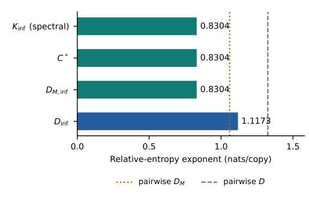
<figcaption class="paper-figure-caption"><b>Fig 2.</b> Fig. 1. The exponent ladder at the running instance. The three single-copy quantities coincide exactly (Theorem 1); the quantum-memory floor Dinf sits strictly above, with the pairwise divergences (dotted) shown for reference — using them in place of the half-space infima would understate both floors.</figcaption>
</figure>
<figure class="paper-figure-card">
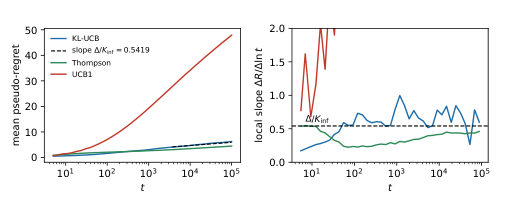
<figcaption class="paper-figure-caption"><b>Fig 3.</b> Fig. 3. Confirmatory regret simulation at the running instance (5000 indepen- dent runs, T = 105; shading: ±2 standard errors). Left: mean pseudo-regret for Bernoulli KL-UCB with the standard threshold ln t [11] on the spectral outcomes (the analyzed threshold of Section V adds O(ln ln t) terms; both are compared in Fig. 2), Thompson sampling [15], and UCB1 [14]. Right: local slope ∆R/∆ln t (UCB1 runs off the panel’s scale). The tail OLS slope over t ∈[104, 105] is 0.656 (bootstrap 95% CI [0.639, 0.675]) for KL-UCB, decreasing toward the predicted ∆/Kinf = 0.5419 (dashed); Thompson approaches the same constant from below (0.437); UCB1’s measured tail slope is 5.97 — 9.1× KL-UCB’s, and 11×...</figcaption>
</figure>
<figure class="paper-figure-card">
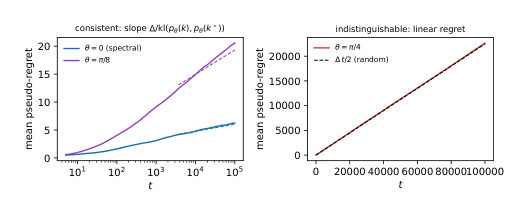
<figcaption class="paper-figure-caption"><b>Fig 4.</b> Fig. 4. Theorem 1 operationally: fixing a projective measurement at angle θ from F’s eigenbasis induces a classical Bernoulli bandit with means pθ(k⋆) = (1+0.9 cos θ)/2 and pθ(k) = (1+0.9 sin θ)/2 (1200 runs each, same index). Left: at θ = 0 the KL-UCB constant is the quantum-optimal ∆/Kinf = 0.5419; at θ = π/8 it degrades to ∆/ kl(pθ(k), pθ(k⋆)) = 1.895 (dashed asymptotes; measured tail slopes 0.63 and 2.44, each decreas- ing toward its constant). Right: at θ = π/4 the induced means coincide ((1+0.9/ √</figcaption>
</figure>
</div>

<p><strong>Summary.</strong> This paper analyzes quantum multi-armed bandits under a single-copy measurement constraint. It proves that the optimal measurement strategy collapses to measuring the reward observable itself, reducing the problem to a classical bandit setting. This establishes that for single-copy learning, quantum memory or adaptive measurement design cannot improve the asymptotic regret bound.</p>
<p><strong>Why it may be interesting.</strong> It provides a rigorous theoretical framework showing when quantum advantages vanish in sequential decision-making tasks, suggesting that for certain physical measurements, the problem reduces entirely to classical information theory.</p>
<details>
<summary>Detailed structure</summary>
<p><strong>Main problem.</strong> Determining the optimal measurement strategy and asymptotic regret bound for sequential learning (multi-armed bandits) when the arms supply unknown quantum states and measurement is limited to a single copy.</p>
<p><strong>Main result.</strong> The single-copy quantum bandit problem collapses to a classical bandit problem defined by the spectral statistics of the reward observable, meaning adaptive quantum measurement design offers no asymptotic advantage over measuring the observable directly.</p>
<p><strong>Method.</strong> The analysis uses quantum information theory tools, including relative entropy, KL divergence, and variational principles, to establish exact equalities between quantum distinguishability measures and classical functionals.</p>
<p><strong>Model / system.</strong> The model involves $K$ arms, each supplying an unknown quantum state $
ho_k$ on a $d$-dimensional Hilbert space. Rewards are determined by a known quantum effect $F$, and the learning process is constrained by single-copy measurements.</p>
<p><strong>Key observables.</strong> Measured relative entropy, Umegaki relative entropy, Burnetas-Katehakis functional $K_{	ext{inf}}(k)$, and the asymptotic regret coefficient.</p>
<p><strong>Important parameters / regimes.</strong> The dimension $d$, the number of arms $K$, the reward effect $F$, and the single-copy constraint.</p>
<p><strong>Assumptions / limitations.</strong> The analysis relies heavily on the 'single-copy' constraint; improvements require measurements outside this class or collective processing.</p>
<p><strong>Figures summary.</strong> Figures illustrate the degradation of the regret constant as the measurement basis deviates from the optimal spectral measurement ($   heta=0$), showing the single-copy optimum is achieved at $  heta=0$.</p>
<p><strong>Paper structure.</strong> The paper establishes a hierarchy of bounds for distinguishability, proves the 'Spectral Collapse' theorem equating quantum distinguishability to a classical functional, and then applies this to show that the optimal single-copy policy is classical (SPECTRAL-KL-UCB).</p>
</details>
<details>
<summary>Abstract</summary>
<p>We study multi-armed bandits whose arms supply unknown quantum states and whose mean rewards are defined by a known effect $F$. Each fresh copy may be measured by an arbitrary, adaptively chosen POVM. We prove an exact collapse: the measured relative entropy from an arm state to its confusing reward half-space equals the classical Burnetas-Katehakis functional of $F$'s spectral statistics, and the spectral measurement of $F$ together with an explicit least-favorable state, built from the derivative of the matrix logarithm, forms a saddle point of the underlying measurement game. Consequently, spectral measurement followed by classical KL-UCB is asymptotically instance-optimal among all consistent single-copy policies, in every finite dimension and for every reward effect under the stated nondegeneracy assumptions: adaptive and randomized measurement design cannot improve the leading logarithmic regret coefficient, and neither can storing copies for later single-copy measurement. A self-contained finite-time bound covers general effects and boundary distributions. Any further improvement must come from measurements outside the single-copy class. For consistent policies with arbitrary quantum memory, an amortized relative-entropy argument gives a converse with the Umegaki half-space divergence, and the two per-arm regret floors, $1/K_{\mathrm{inf}}$ and $1/D_{\mathrm{inf}}$, coincide if and only if the arm commutes with $F$. Whether the Umegaki floor is attainable involves a composite quantum Stein problem and a separate reduction to adaptive regret; we pose it as an open problem, with two-copy numerical evidence.</p>
</details>
<p><sub><a href="#top">↑ back to top</a></sub></p>

<p><a id="paper-2609.39834"></a></p>
<h3 id="all-microwave-multiqubit-gates"><a href="http://arxiv.org/abs/2609.39834v1">All-Microwave Multiqubit Gates</a></h3>
<p><strong>Authors:</strong> Guanqi Wang, Yao Song, Peng-Bo Li, Xiu-Hao Deng<br>
<strong>Type:</strong> theory · <strong>Category:</strong> quantum information and computing · <strong>PDF:</strong> <a href="https://arxiv.org/pdf/2609.39834v1">https://arxiv.org/pdf/2609.39834v1</a><br>
<strong>Analysis basis:</strong> full PDF text, analyzed in chunks
<strong>Topic relevance:</strong> <code>QC/QI experiment</code> <strong>3/5</strong></p>
<div class="figure-strip-hint">↔ Scroll figures horizontally</div>
<div class="paper-figures-scroll">
<figure class="paper-figure-card">
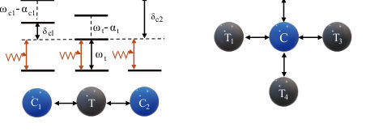
<figcaption class="paper-figure-caption"><b>Fig 1.</b> FIG. 1: Framework of the proposed model. (a) Schematic of the (n+m) multiqubit gate on a superconducting qubit network, where each circle represents a qubit, black circles (T) denote target qubits and blue circles (C) denote control qubits. The bottom part illustrates how the structure serves as a resource in quantum circuits. The pink and blue back- grounds represent the control and target qubits, respectively. (b) This figure illustrates the model for designing a three- qubit gate. The three qubits are coupled with strengths g1 and g2, and their energy levels are shown on the bottom. Two CR drives resonant with ωt1 and ωt2 are applied to the con- trol qubit, while two additional resonant...</figcaption>
</figure>
<figure class="paper-figure-card">
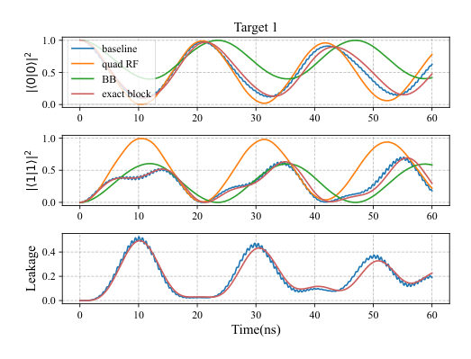
<figcaption class="paper-figure-caption"><b>Fig 2.</b> FIG. 2: The fidelity of different methods is assessed in this figure through dynamic simulations of the system depicted in CXX. Three energy levels are taken into account. Sub- plots show time evolution of the first, second and leakage level of the target qubit 1. The blue curve represents actual dy- namics from the initial Hamiltonian. The orange and the green curves indicate effective Hamiltonian results calculated by quad frame rotation and block diagonalization with Bloch theory. And the red one represents exact block diagonaliza- tion.</figcaption>
</figure>
<figure class="paper-figure-card">
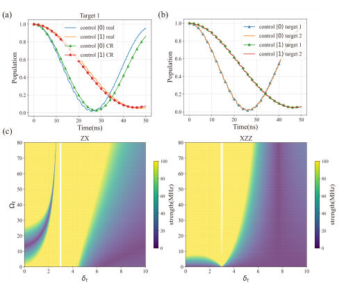
<figcaption class="paper-figure-caption"><b>Fig 3.</b> FIG. 3: (a) Dynamics of the CXX gate under optimized pa- rameters in 50 ns, the blue and orange curves denote the occu- pation of the first and second target qubit, respectively, when the control is in state |0⟩, while the green and red curves rep- resent the occupations of target 1 and target 2 under control state |1⟩. The dynamics of the two target qubits exhibit sim- ilarity, as their evolution can be treated independently. (b) Dynamics of target 1 in CXX: the blue and orange curves cor- respond to the actual evolution, and the remaining two curves depict the dynamics via effective Hamiltonian. (c) Compar- ison between the desired ZX interaction and the unwanted XZZ interaction as...</figcaption>
</figure>
<figure class="paper-figure-card">
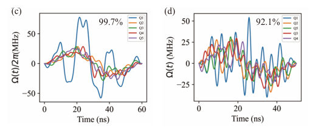
<figcaption class="paper-figure-caption"><b>Fig 4.</b> FIG. 4: Optimization and Fidelity of Multiqubit Gates (a) Optimization of the CYY gate. ωt1 = 5.21 GHz, ωt2 = 5.2 GHz, the control qubit frequency is ωc=5.5 GHz, and the coupling strengths are g1,2 = 8 MHz. The anharmonicity is αc = −300 MHz, αt1 = −320 MHz, αt2 = −350 MHz. Five microwave pulses at frequency ωt = 5.2 GHz are applied It displays the optimized pulse shapes with Q1 on control and Q2,Q3 on target 1, Q4,Q5 on target 2. And the fidelity after optimization is shown on the top. (b) results for real CXX gates with the same parameters. (c) results for CZX gates. (d) Optimization of the CXXXX gate. Parameters for this gate are ωti(i=1,2...) = 5.2 GHz and αi = −300 MHz,ωc = 5.3 GHz and...</figcaption>
</figure>
<figure class="paper-figure-card">
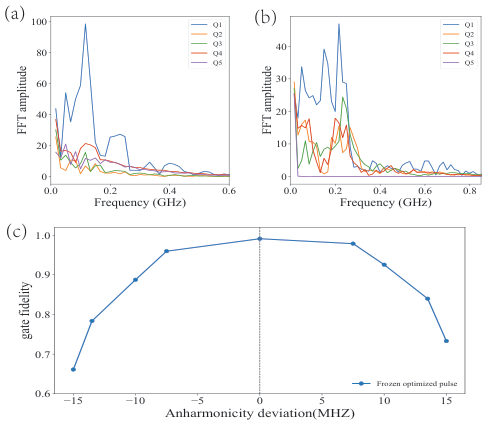
<figcaption class="paper-figure-caption"><b>Fig 5.</b> FIG. 5: Frequency spectra of the optimized control pulses for (a) the three-qubit CXX gate and (b) the five-qubit gate. (c) Sensitivity of the optimized gates to anharmonicity variations</figcaption>
</figure>
</div>

<p><strong>Summary.</strong> This paper presents an all-microwave scheme to implement high-fidelity, single-step multiqubit gates on superconducting transmon qubits. By leveraging cross-resonance drives, the authors overcome the need for tunable couplers and achieve gate fidelities exceeding 99.9%. This hardware-efficient approach promises to significantly reduce the circuit depth for quantum computations.</p>
<p><strong>Why it may be interesting.</strong> This work provides a concrete, hardware-efficient, and theoretically rigorous pathway to implementing complex quantum logic gates using only microwave control fields, which is highly relevant for superconducting quantum hardware.</p>
<details>
<summary>Detailed structure</summary>
<p><strong>Main problem.</strong> The primary challenge is realizing high-fidelity, single-step multiqubit gates necessary for reducing circuit depth in near-term quantum processors.</p>
<p><strong>Main result.</strong> The authors demonstrated three-qubit gates exceeding 99.9% fidelity in 60 ns and confirmed the physical viability of a five-qubit CXXXX architecture.</p>
<p><strong>Method.</strong> They propose an all-microwave scheme using cross-resonance (CR) drives and derive the effective Hamiltonian using quad frame rotation and rigorous block diagonalization.</p>
<p><strong>Model / system.</strong> The system is based on frequency-tunable superconducting transmon networks, modeled by a general Hamiltonian that is simplified for analytical tractability.</p>
<p><strong>Key observables.</strong> Gate fidelity ($\ge 99.9\%$), gate duration ($\le 60$ ns), and the ability to realize CXXXX gates.</p>
<p><strong>Important parameters / regimes.</strong> The scheme is 'coupler-free' and operates entirely using microwave drives.</p>
<p><strong>Assumptions / limitations.</strong> The analysis relies on approximations like the Rotating Wave Approximation (RWA) and specific scale-separation conditions for the effective Hamiltonian derivation.</p>
<p><strong>Figures summary.</strong> Figures illustrate the general framework for $(n+m)$ multiqubit gates, including schematics for three-qubit and CXXXX gate configurations.</p>
<p><strong>Paper structure.</strong> The paper progresses from establishing the need for multiqubit gates, detailing the all-microwave CR drive scheme, deriving the effective Hamiltonian using advanced theoretical tools (RWA, block diagonalization), and concluding with numerical simulations and error analysis.</p>
</details>
<details>
<summary>Abstract</summary>
<p>Implementing high-fidelity multiqubit gates is critical for reducing circuit depth in near-term quantum processors and fault-tolerant architectures. However, realizing multiqubit interactions and entanglement remains a critical challenge that limits the implementation of multiqubit gates. Here we propose an all-microwave scheme to realize single-step multiqubit gates incorporating n control and m target qubits, tailored for frequency-tunable superconducting transmon networks. By leveraging cross-resonance (CR) drives, this approach induces effective two-body ZX interactions that are significantly stronger than those achieved in conventional resonant regimes, circumventing the need for tunable couplers. The system's effective Hamiltonian is analytically derived using both quad frame rotation and rigorous block diagonalization. These combined theoretical methods facilitate the identification of optimal parameter regimes that simultaneously enhance desired target couplings and suppress parasitic higher-order terms, such as ZXX interactions. Through numerical simulations and gradient-based pulse-shape optimization, we demonstrate three-qubit gates achieving fidelities exceeding 99.9% within a 60 ns gate duration. Furthermore, we evaluate the fundamental scalability of this framework by extending the optimization to a five-qubit CXXXX architecture, confirming the physical viability of the multi-target driving scheme. Because these multiqubit operations naturally emulate stabilizer measurements, this architecture provides a hardware-efficient strategy for reducing the circuit depth of stabilizer-type operations by replacing sequential two-qubit gate decompositions with single-step multiqubit gates.</p>
</details>
<p><sub><a href="#top">↑ back to top</a></sub></p>

<p><a id="paper-2609.39121"></a></p>
<h3 id="bivariate-bicycle-codes-and-metachecks-syndrome-repair-measurement-fault-ambiguity-and-logical-obstructions"><a href="http://arxiv.org/abs/2609.39121v1">Bivariate Bicycle Codes and Metachecks: Syndrome Repair, Measurement-Fault Ambiguity, and Logical Obstructions</a></h3>
<p><strong>Authors:</strong> Mohammad Rowshan<br>
<strong>Type:</strong> both · <strong>Category:</strong> quantum information and computing · <strong>PDF:</strong> <a href="https://arxiv.org/pdf/2609.39121v1">https://arxiv.org/pdf/2609.39121v1</a><br>
<strong>Analysis basis:</strong> full PDF text, analyzed in chunks
<strong>Topic relevance:</strong> <code>quantum measurements</code> <strong>3/5</strong></p>
<div class="figure-strip-hint">↔ Scroll figures horizontally</div>
<div class="paper-figures-scroll">
<figure class="paper-figure-card">
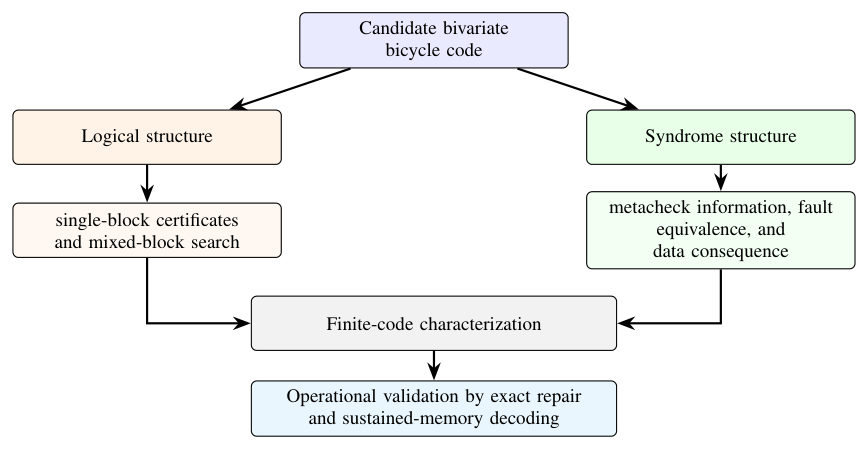
<figcaption class="paper-figure-caption"><b>Fig 1.</b> Fig. 1. Logical and syndrome calculations used in the paper. The two sides are kept separate because syndrome redundancy does not determine quantum distance, and quantum distance does not determine the reliability of syndrome repair.</figcaption>
</figure>
<figure class="paper-figure-card">
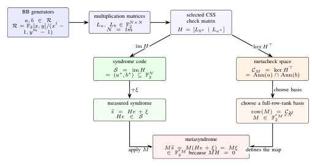
<figcaption class="paper-figure-caption"><b>Fig 2.</b> Fig. 2. Extraction of the syndrome code and metachecks from a BB code. The generators a and b determine the multiplication matrices and hence the selected CSS check matrix H. Its image is the valid-syndrome code S, whereas the kernel of H⊤gives the metacheck space CM. Choosing a basis of CM gives the metacheck matrix M. For a noisy measurement es = He+ξ, the relation MH = 0 removes the data contribution, leaving the metasyndrome Mes = Mξ.</figcaption>
</figure>
<figure class="paper-figure-card">
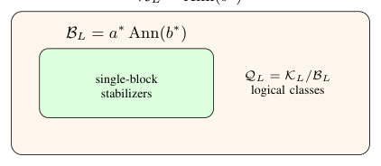
<figcaption class="paper-figure-caption"><b>Fig 3.</b> Fig. 3. Left-block quotient. The outer space contains errors invisible to the selected syndrome; quotienting by the exact stabilizer slice leaves logical classes.</figcaption>
</figure>
<figure class="paper-figure-card">
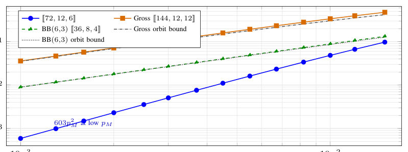
<figcaption class="paper-figure-caption"><b>Fig 4.</b> Fig. 4. Exact minimum-weight syndrome-repair failure on a denser measurement-noise grid. The [[72, 12, 6]] curve begins quadratically with coefficient 603. For Gross and BB(6, 3), the black curves show the finite-rate orbit bounds for metasyndrome-only exact repair, 1 −(1 −pM)36 and 1 −(1 −pM)9, from Corollary 6. These finite-rate bounds remain distinct from the exact curves away from the low-noise limit.</figcaption>
</figure>
<figure class="paper-figure-card">
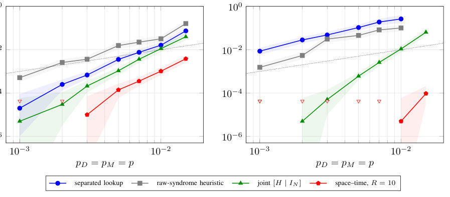
<figcaption class="paper-figure-caption"><b>Fig 5.</b> Fig. 5. Sustained phenomenological memory with R = 10 noisy rounds and one ideal final round. Markers are the observed effective rates εeff; connecting segments are guides between sampled physical error rates and are not fitted or smoothed. Light ribbons are 95% anytime-valid beta–binomial mixture confidence sequences, retained because the runs use adaptive stopping. Downward open triangles denote one-sided 95% upper limits for zero-failure runs. The dotted line is εeff = p. The separated BP+OSD repair variant is omitted here for clarity; its single-fault behavior is reported exhaustively in Table VIII. Saturated points with block failure above 0.95 are not shown.</figcaption>
</figure>
</div>

<p><strong>Summary.</strong> This paper analyzes Bivariate Bicycle codes to understand how built-in redundancy (metachecks) can be used for syndrome repair in quantum error correction. It shows that theoretical limitations exist for metasyndrome-only repair, especially as codes scale. The findings strongly favor joint decoding strategies over separated repair stages in the presence of measurement noise.</p>
<p><strong>Why it may be interesting.</strong> The rigorous algebraic framework connecting syndrome redundancy to physical error correction limitations provides deep insights into the practical limits of quantum memory and fault tolerance.</p>
<details>
<summary>Detailed structure</summary>
<p><strong>Main problem.</strong> The paper investigates syndrome repair in quantum error correction codes, specifically analyzing how built-in redundancy (metachecks) in Bivariate Bicycle (BB) codes handles measurement-fault ambiguity.</p>
<p><strong>Main result.</strong> Metasyndrome-only exact repair fails for bounded-$k$ BB families with growing block length, suggesting that joint data–measurement decoding is superior to separated repair stages when ambiguity is high.</p>
<p><strong>Method.</strong> The authors employ algebraic tools, including quotient algebras and the analysis of translation groups, to characterize the constraints imposed by metachecks on measured syndromes.</p>
<p><strong>Model / system.</strong> The study focuses on Bivariate Bicycle (BB) codes within the Calderbank–Shor–Steane (CSS) stabilizer formalism, analyzing their syndrome code ($S$) and metacheck space ($C_M$).</p>
<p><strong>Key observables.</strong> Metasyndrome ($    ext{Mes}$), syndrome distance ($d_S$), unit group size (bounding single faults), and the failure probability in sustained-memory experiments.</p>
<p><strong>Important parameters / regimes.</strong> Measurement-error rate ($p$), code parameters (e.g., $[[72, 12, 6]]$), and the block length/code family structure.</p>
<p><strong>Assumptions / limitations.</strong> The analysis separates logical operators and measurement-side redundancy, and the sustained-memory experiment uses independent Bernoulli data and measurement faults.</p>
<p><strong>Figures summary.</strong> Figures illustrate the extraction process of the syndrome code and metachecks, while tables provide comprehensive notation and specific code examples.</p>
<p><strong>Paper structure.</strong> The paper moves from defining the algebraic structure of BB codes and their redundancy (metachecks) to deriving the metasyndrome, establishing theoretical bounds on fault distinguishability, and concluding with phenomenological experiments comparing decoding strategies.</p>
</details>
<details>
<summary>Abstract</summary>
<p>Faulty syndrome measurements can corrupt an otherwise correct quantum-error correction step. Bivariate bicycle (BB) codes contain dependent stabilizer checks, so their measured syndromes obey parity constraints that can be used as metachecks. We study when this built-in redundancy actually supports syndrome repair and how it interacts with the logical structure of the code. Annihilator quotients identify single-block logical classes and show when a mixed-block search is unavoidable. For syndrome repair, the metasyndrome is equivalent to reduction modulo the valid-syndrome ideal. The translation group therefore maps into the unit group of a quotient algebra of dimension $k/2$, with kernel $K_M$. This gives a distance-two characterization, a unit-group bound on distinguishable single faults, and a family-level obstruction: for bounded-$k$ BB families with growing block length, metasyndrome-only exact repair fails with probability tending to one at any fixed measurement-error rate. With no intervening data fault, the same orbit count also gives the minimum partial second measurement needed to remove every single-fault ambiguity. Exact calculations separate the standard examples. The $[[72,12,6]]$ code has syndrome distance three and minimum-weight repair corrects every single measurement fault, whereas Gross $[[144,12,12]]$ has 36 indistinguishable single-fault pairs. Sustained phenomenological experiments show the same qualitative contrast and favor joint data--measurement decoding over a separated repair stage on the codes with stronger ambiguity. The analysis extends our earlier coprime-period treatment to general two-block BB codes and separates measurement ambiguity from the data error it can induce.</p>
</details>
<p><sub><a href="#top">↑ back to top</a></sub></p>

<p><a id="paper-2609.40266"></a></p>
<h3 id="compatibility-of-quantum-instruments"><a href="http://arxiv.org/abs/2609.40266v1">Compatibility of quantum instruments</a></h3>
<p><strong>Authors:</strong> Chloe Kim, Yujie Zhang, Eric Chitambar, Marius Junge, Felix Leditzky<br>
<strong>Type:</strong> theory · <strong>Category:</strong> quantum information and computing · <strong>PDF:</strong> <a href="https://arxiv.org/pdf/2609.40266v1">https://arxiv.org/pdf/2609.40266v1</a><br>
<strong>Analysis basis:</strong> full PDF text, analyzed in chunks
<strong>Topic relevance:</strong> <code>quantum measurements</code> <strong>3/5</strong></p>
<div class="figure-strip-hint">↔ Scroll figures horizontally</div>
<div class="paper-figures-scroll">
<figure class="paper-figure-card">
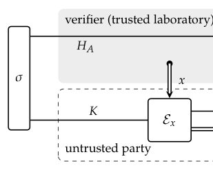
<figcaption class="paper-figure-caption"><b>Fig 1.</b> Figure 2: 𝑑-preparable assemblage  𝜎𝑎|𝑥 with SN (𝜎) ≤𝑑 fig:scenario</figcaption>
</figure>
<figure class="paper-figure-card">
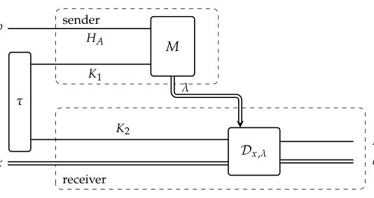
<figcaption class="paper-figure-caption"><b>Fig 2.</b> Figure 3: One-way LOCC implementation (8.5) of a 𝑑-compatible multi- instrument. The sender holds the input 𝜌and the half 𝐾1 of the shared state 𝜏with SN (𝜏) ≤𝑑, measures 𝐻𝐴⊗𝐾1 with the POVM (𝑀𝜆)𝜆∈L and sends the outcome 𝜆to the receiver. The receiver holds the label 𝑥and the half 𝐾2 and applies the instrument D𝑥,𝜆to 𝐾2. g:one-way-locc</figcaption>
</figure>
<figure class="paper-figure-card">
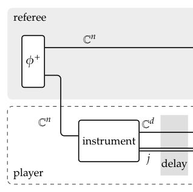
<figcaption class="paper-figure-caption"><b>Fig 3.</b> Figure 4: Memory-bounded nontransient preparation game. g:delayed-game</figcaption>
</figure>
</div>

<p><strong>Summary.</strong> This work develops a generalized concept called $d$-compatibility to characterize when a set of quantum measurements or instruments can be simulated by a single parent measurement using limited quantum memory ($d$ dimensions). By translating this into a problem of linear factorization in operator spaces, the authors provide powerful, mathematically rigorous tools to quantify the resource cost of quantum information processing.</p>
<p><strong>Why it may be interesting.</strong> The rigorous mathematical framework connecting measurement compatibility to operator factorization provides powerful tools for quantifying the resource cost (quantum memory $d$) required to simulate complex quantum operations.</p>
<details>
<summary>Detailed structure</summary>
<p><strong>Main problem.</strong> The paper investigates quantum measurement compatibility, asking whether a family of measurements can be simulated by a single 'parent' measurement followed by classical post-processing.</p>
<p><strong>Main result.</strong> It extends this concept to '$d$-compatibility' using operator factorization, establishing that compatible families form closed sets and providing a functional to certify incompatibility.</p>
<p><strong>Method.</strong> The core method involves reformulating compatibility into a problem of linear factorization within the language of operator spaces and operator systems.</p>
<p><strong>Model / system.</strong> The study applies to general quantum measurements, multi-instruments, and quantum channels, generalizing the concept to include a $d$-dimensional quantum memory resource.</p>
<p><strong>Key observables.</strong> Measurement compatibility, $d$-compatibility, Schmidt numbers, and generalized robustness of compatibility.</p>
<p><strong>Important parameters / regimes.</strong> The dimension parameter $d$, which quantifies the required quantum memory resource for simulation.</p>
<p><strong>Assumptions / limitations.</strong> The analysis relies heavily on advanced functional analysis theorems concerning operator spaces and the structure of completely bounded maps.</p>
<p><strong>Figures summary.</strong> Figure 1 illustrates a circuit diagram representing a $d$-compatible multi-instrument, showing the flow through quantum and classical processing lines.</p>
<p><strong>Paper structure.</strong> The paper builds from the definition of compatibility to the generalized $d$-compatibility, develops the mathematical machinery using operator factorization, and applies these tools to certify incompatibility for specific physical models.</p>
</details>
<details>
<summary>Abstract</summary>
<p>Measurement compatibility asks whether a family of quantum measurements can be simulated by one parent measurement followed by classical post-processing. We extend this measurement compatibility to the notion of \emph{$d$-compatibility} for measurements, channels, and instruments whose parent passes a $d$-dimensional quantum system and unlimited classical information to the post-processing. We formulate $d$-compatibility as a common linear factorization of operator spaces and operator systems and show that $d$-compatible families form a closed set, even with infinitely many settings and a separable infinite-dimensional input. To certify $d$-incompatibility, we define the compatibility functional as the smallest product of completely bounded norms over common factorizations through a $d$-dimensional register. Using factorization theory of operator spaces, we show that measure-and-prepare channels defined in terms of mutually unbiased bases and pinching channels defined in terms of Heisenberg-Weyl operators are $d$-incompatible in certain regimes of $d$. We also link $d$-compatibility of multi-instruments to the preparability of Choi assemblages using channel-state duality, and use this connection to show that for bipartite states the (in)compatibility of instruments can be used to certify Schmidt numbers and the implementability of the instrument using one-way LOCC protocols. Finally, our compatibility functional also bounds the generalized robustness of compatibility, which we interpret through a memory-bounded nontransient preparation game.</p>
</details>
<p><sub><a href="#top">↑ back to top</a></sub></p>

<p><a id="paper-2609.38300"></a></p>
<h3 id="exact-operator-complexity-measures-from-random-matchgate-unitaries"><a href="http://arxiv.org/abs/2609.38300v1">Exact Operator Complexity Measures from Random Matchgate Unitaries</a></h3>
<p><strong>Authors:</strong> Gregory A. L. White, Jens Eisert, Neil Dowling<br>
<strong>Type:</strong> theory · <strong>Category:</strong> statistical mechanics · <strong>PDF:</strong> <a href="https://arxiv.org/pdf/2609.38300v1">https://arxiv.org/pdf/2609.38300v1</a><br>
<strong>Analysis basis:</strong> full PDF text, analyzed in chunks
<strong>Topic relevance:</strong> <code>analog quantum simulation</code> <strong>3/5</strong></p>
<div class="figure-strip-hint">↔ Scroll figures horizontally</div>
<div class="paper-figures-scroll">
<figure class="paper-figure-card">
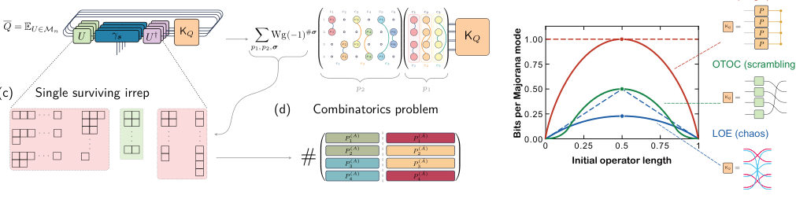
<figcaption class="paper-figure-caption"><b>Fig 1.</b> FIG. 1. An overview of steps taken and contributions in this work. (a) We consider operational replica quantities of the form Tr[(UγνU †)⊗kKQ] averaged over the ensemble of free-fermionic Gaussian unitaries. γν is an initial operator whose Heisenberg evolution we probe according to some quantity Q via a boundary operator KQ. (b) The first panel average is converted into a sum over the free-fermionic commutant, for which we use the Brauer algebra as our basis. (c) We show (Lemma 1) that the resulting expression simplifies substantially, with support on only a single irrep sector, allowing for direct evaluation of the known Weingarten eigenvalue on this sector. (d) The problem thus reduces to...</figcaption>
</figure>
<figure class="paper-figure-card">

<figcaption class="paper-figure-caption"><b>Fig 2.</b> FIG. 2. Different parameter slices for the annealed matchgate-average Rényi-2 local operator entanglement of a length-L Majorana string across a bipartition with subsystem size M, evaluated exactly from Application 1. (a) Page-like-curve at the half-chain cut M = N/2. We compare exact finite-size results from Eq. (54); the asymptotic value Eq. (57); and the MPO bond dimension bound, Eq. (46). (b) Dependence on the cut at fixed string length, for N = 60 and L = 2, 4, 8, 16. Symbols are exact (Eq. (54)); solid lines are the leading fixed-L expansions (Eq. (59)) f = M/N; dashed lines are the naive upper bound min  L, 2N −L, 2M, 2(N −M)  : the smaller of the Majorana string-length bound...</figcaption>
</figure>
<figure class="paper-figure-card">

<figcaption class="paper-figure-caption"><b>Fig 3.</b> FIG. 3. Annealed matchgate-averaged Rényi-2 OSE from the closed form of Eq. (66) in the extensive string-length regime, with the upper bounds of Eq. (67) shown as dotted lines.</figcaption>
</figure>
<figure class="paper-figure-card">

<figcaption class="paper-figure-caption"><b>Fig 4.</b> FIG. 4. Matchgate-averaged four-replica OTOC evaluated from Eq. (76). We write ℓ= L/2N, τ = L′/2N for the fractions of the 2N Majorana modes occupied by the operator and by the probe, respectively. (a) Exact OTOC (4) against τ for L = 1 (blue) and L = 2 (green), with N = 2, 4, 8, 16, 32 shown light to dark. At fixed L the correlator is an O(1) number for generic probe lengths and does not decay with system size. (b) The same extensive decay rate over the whole (ℓ, τ) plane. This is symmetric about the diagonal ℓ= τ, and maximal at the most scrambled point ℓ= τ = 1 2, that is</figcaption>
</figure>
<figure class="paper-figure-card">

<figcaption class="paper-figure-caption"><b>Fig 5.</b> FIG. 5. The magic-versus-entanglement separation for ran- dom matchgates on N = 32 sites and the half-chain cut, with the Fermionic bounds of Eqs. (46) and (67) shown as dashed lines. The shaded region is the window allowed by LOE(2) ≤OSE(2), the entropic version of Eq. (80), showing a large separation that persists in the thermodynamic limit. Random free-fermionic dynamics therefore rather uniformly spread operators in the Pauli basis, but these strings have suppressed operator entanglement.</figcaption>
</figure>
</div>

<p><strong>Summary.</strong> This work develops a powerful free-fermionic calculus to analyze complexity measures like entanglement and OTOCs in random matchgate circuits. The key finding is that while these measures exhibit volume laws, their long-time saturation values do not automatically imply computational hardness. This clarifies the distinction between inherent quantum resources and the complexity of classical simulation.</p>
<p><strong>Why it may be interesting.</strong> It provides a concrete, analytically tractable model (matchgates) to test fundamental questions about quantum complexity, distinguishing between resource measures and simulation complexity in a setting relevant to condensed matter physics.</p>
<details>
<summary>Detailed structure</summary>
<p><strong>Main problem.</strong> The paper investigates the extent to which typical complexity measures are saturated under classically simulable dynamics, specifically by analyzing random matchgate ensembles.</p>
<p><strong>Main result.</strong> The authors show that for random matchgates, both operator entanglement and stabiliser entropy obey volume laws, while the long-time saturation value of OTOCs does not necessarily witness computational hardness, suggesting a distinction between quantum resources and simulation complexity.</p>
<p><strong>Method.</strong> The core method involves developing a tractable free-fermionic unitary Weingarten calculus formulated in the Majorana basis to compute moments of operators, simplifying the problem to combinatorics.</p>
<p><strong>Model / system.</strong> The system under study is random matchgate unitaries, which describe dynamics that are classically tractable but exhibit features of complex quantum systems. The analysis focuses on Majorana strings and their evolution.</p>
<p><strong>Key observables.</strong> Local-Operator Entanglement (LOE), Operator Stabiliser Entropy (OSE), and higher-order Out-of-Time-Ordered Correlators (OTOCs).</p>
<p><strong>Important parameters / regimes.</strong> The analysis depends on the length of initial Majorana strings ($L$) and the replica count ($k$).</p>
<p><strong>Assumptions / limitations.</strong> The analysis relies on the free-fermionic structure and the ability to reduce the averaging problem to a combinatorial counting problem.</p>
<p><strong>Figures summary.</strong> Figure 1 provides an overview of the methodology, summarizing results for LOE, OSE, and OTOCs for $k=4$ replicas using free-fermionic Gaussian unitaries.</p>
<p><strong>Paper structure.</strong> The paper progresses by first establishing the technical tool (Weingarten calculus) to compute operator moments, then applying this to derive closed-form expressions for LOE, OSE, and OTOCs, and finally discussing the implications for resource theories and classical simulation.</p>
</details>
<details>
<summary>Abstract</summary>
<p>Matchgate circuits describe classically tractable dynamics in a physically relevant setting while nonetheless exhibiting features characteristic of complex quantum systems, such as high amounts of magic. This invites the broader question: to what extent are typical complexity measures saturated under trivial dynamics? Here, we address this by studying the behaviour of different Heisenberg-picture complexity measures in random matchgate ensembles. Our main technical contribution is a tractable and generalisible free-fermionic unitary Weingarten calculus formulated entirely in the Majorana basis. This method is tailored to computing moments of operators, and simplifies to a combinatorics problem which depends on the boundary conditions prescribed by a given operator functional. Using this framework, we derive closed-form expressions for the typical local-operator entanglement, operator stabiliser entropy, and higher-order out-of-time-ordered correlators. For extensive initial Majorana strings, both operator entanglement and stabiliser entropy obey volume laws, even though the underlying circuits remain classically simulable. Out-of-time-ordered correlators can likewise become exponentially small, showing that their late-time saturation value alone does not witness computational hardness and constituting a classically tractable example of emergent free independence. Finally, we relate these separations to operator resource theories, showing how operator entanglement beyond the Gaussian baseline lower-bounds the number of non-Gaussian gates in doped matchgate circuits. Our results present a practical toolbox for computing exact averages over random matchgates, while clarifying the distinction between quantum resources versus simulation complexity, and their dependence on the representation being exploited.</p>
</details>
<p><sub><a href="#top">↑ back to top</a></sub></p>

<p><a id="paper-2609.40099"></a></p>
<h3 id="finding-gflow-on-unlabelled-open-graphs"><a href="http://arxiv.org/abs/2609.40099v1">Finding gflow on unlabelled open graphs</a></h3>
<p><strong>Authors:</strong> Miriam Backens, Victor Gasse, Piotr Mitosek, Robert Raussendorf<br>
<strong>Type:</strong> theory · <strong>Category:</strong> quantum information and computing · <strong>PDF:</strong> <a href="https://arxiv.org/pdf/2609.40099v1">https://arxiv.org/pdf/2609.40099v1</a><br>
<strong>Analysis basis:</strong> full PDF text, analyzed in chunks
<strong>Topic relevance:</strong> <code>quantum measurements</code> <strong>3/5</strong></p>
<div class="figure-strip-hint">↔ Scroll figures horizontally</div>
<div class="paper-figures-scroll">
<figure class="paper-figure-card">

<figcaption class="paper-figure-caption"><b>Fig 1.</b> Low-resolution page preview, page 2</figcaption>
</figure>
<figure class="paper-figure-card">

<figcaption class="paper-figure-caption"><b>Fig 2.</b> Low-resolution page preview, page 3</figcaption>
</figure>
<figure class="paper-figure-card">

<figcaption class="paper-figure-caption"><b>Fig 3.</b> Low-resolution page preview, page 4</figcaption>
</figure>
<figure class="paper-figure-card">

<figcaption class="paper-figure-caption"><b>Fig 4.</b> Low-resolution page preview, page 5</figcaption>
</figure>
<figure class="paper-figure-card">

<figcaption class="paper-figure-caption"><b>Fig 5.</b> Low-resolution page preview, page 6</figcaption>
</figure>
</div>

<p><strong>Summary.</strong> This paper develops an efficient algorithm to determine the 'gflow' condition on an open graph, which characterizes deterministic computation in measurement-based quantum computing. By solving a system of linear equations derived from the graph structure, the authors achieve an $O(n^3)$ complexity for finding the necessary measurement labelling. This advances the theoretical understanding of resource state computation in quantum optics.</p>
<p><strong>Why it may be interesting.</strong> This work provides a powerful, efficient theoretical tool for characterizing the computational power and determinism of quantum circuits implemented via photonic measurement-based quantum computing.</p>
<details>
<summary>Detailed structure</summary>
<p><strong>Main problem.</strong> The paper addresses finding a 'gflow' condition on an incompletely specified computation represented by an unlabelled open graph in the context of measurement-based quantum computing.</p>
<p><strong>Main result.</strong> They present an algorithm that finds a measurement labelling and a compatible gflow in $O(n^3)$ time, generalizing previous methods to handle partial constraints on the measurement order.</p>
<p><strong>Method.</strong> The core method involves constructing and solving a large system of linear equations derived from the open graph structure, using techniques like Gaussian elimination.</p>
<p><strong>Model / system.</strong> The system is the one-way model of measurement-based quantum computing (MBQC), which operates on a resource graph state via successive adaptive single-qubit measurements.</p>
<p><strong>Key observables.</strong> gflow (a necessary and sufficient condition for deterministic computation), measurement labelling, and the induced partial order $\prec_c$.</p>
<p><strong>Important parameters / regimes.</strong> The complexity is $O(n^3)$ for finding the flow, and the graph structure is defined by the open graph $(G, I, O)$.</p>
<p><strong>Assumptions / limitations.</strong> The analysis assumes the use of Pauli measurements and adapts flow-finding concepts from previous literature.</p>
<p><strong>Figures summary.</strong> Figure 1 illustrates an example open graph, its corresponding correction matrix, and the induced relation matrix used in the analysis.</p>
<p><strong>Paper structure.</strong> The paper builds from defining the open graph and the gflow condition, develops the algebraic characterization using flow-demand and order-demand matrices, and culminates in presenting the generalized $O(n^3)$ algorithm for finding the labelling and flow.</p>
</details>
<details>
<summary>Abstract</summary>
<p>The one-way model of measurement-based quantum computing implements computations via successive adaptive single-qubit measurements on a resource graph state. This model has practical applications, particularly in photonics, and it is also useful as a theoretical tool e.g. for optimisation. Gflow is a necessary and sufficient condition for implementing certain one-way computations deterministically (in a suitable sense); it is also used in efficient translations from the one-way model to quantum circuits. For a computation on $n$ qubits, a gflow can be found in $\mathcal{O}(n^3)$ time.   Here, we consider an incompletely specified computation given by an unlabelled open graph: the graph state as well as the input and output qubits are known, but the measurements have not yet been fixed. We give an algorithm that identifies a measurement labelling and a compatible gflow, and runs in $\mathcal{O}(n^3)$, strictly generalising the previous approach. The new algorithm can also handle restrictions on the order of the measurements and returns only solutions compatible with these constraints. We additionally prove that if an open graph has equal numbers of inputs and outputs, it has at most one labelling compatible with gflow; and show how to identify additional inputs for an open graph that does not yet have the maximal number, without breaking an existing gflow. Finally, we demonstrate a relationship between inputs or potential inputs and the information flow in the computation.</p>
</details>
<p><sub><a href="#top">↑ back to top</a></sub></p>

<p><a id="paper-2609.40100"></a></p>
<h3 id="logarithmic-depth-fermion-sampling-anticoncentration-and-average-case-hardness"><a href="http://arxiv.org/abs/2609.40100v1">Logarithmic-Depth Fermion Sampling: Anticoncentration and Average-Case Hardness</a></h3>
<p><strong>Authors:</strong> Natansh Mathur, Iordanis Kerenidis<br>
<strong>Type:</strong> theory · <strong>Category:</strong> quantum information and computing · <strong>PDF:</strong> <a href="https://arxiv.org/pdf/2609.40100v1">https://arxiv.org/pdf/2609.40100v1</a><br>
<strong>Analysis basis:</strong> full PDF text, analyzed in chunks
<strong>Topic relevance:</strong> <code>analog quantum simulation</code> <strong>3/5</strong></p>
<div class="figure-strip-hint">↔ Scroll figures horizontally</div>
<div class="paper-figures-scroll">
<figure class="paper-figure-card">

<figcaption class="paper-figure-caption"><b>Fig 1.</b> Figure 1: Fermion Sampling from preparation to anticoncentration. (a) Magic-state prepa- ration, redrawn from [3, Fig. 1]. The circuit maps |0000⟩to (|0011⟩+ |1100⟩)/ √</figcaption>
</figure>
<figure class="paper-figure-card">

<figcaption class="paper-figure-caption"><b>Fig 2.</b> Figure 2: The occupation index of the collision chain. Two replicas at n = 8, k = 4, with 0, 2, or 4 common occupied modes (filled circles). The pictures illustrate the index r; the sectors Qr live in the projected copy-singlet space, and individual basis vectors need not be singlets. One matching layer changes the sector weights, and the collision selects r = k.</figcaption>
</figure>
<figure class="paper-figure-card">

<figcaption class="paper-figure-caption"><b>Fig 3.</b> Figure 3: Why the magic input changes the relaxation scale. Shown are the first two spectral contributions, using their large-n forms. For a Fock input, c1 ∼n; for the magic input it stays bounded. At the scale n(4/9)t = Θ(1), the first contribution vanishes and the second remains finite. Summing all even modes gives e3z/2.</figcaption>
</figure>
<figure class="paper-figure-card">

<figcaption class="paper-figure-caption"><b>Fig 4.</b> Figure 4: The magic-input collision profile. Markers show the complete exact spectral sum at integer depths for n = 32, 64, 128, 256, 512, against s = t −log n/ log(9/4). The solid curve is the proved limit exp[3</figcaption>
</figure>
<figure class="paper-figure-card">

<figcaption class="paper-figure-caption"><b>Fig 5.</b> Figure 5: Direct circuit evolution checks the collision chain. For each size, circles (Haar gates) and squares (finite gates) show mean collision divided by the exact Haar benchmark, using 2048 circuits per gate law. Error bars are pointwise 95% confidence intervals and may be smaller than the markers. The solid line joins exact integer-depth means as a guide; the dashed line is the factor-two target. Agreement for both laws checks the collision prediction without using the reduced chain to propagate the simulated state.</figcaption>
</figure>
</div>

<p><strong>Summary.</strong> This paper analyzes Fermion Sampling to demonstrate that logarithmic circuit depth is sufficient to achieve strong quantum computational guarantees, including anticoncentration and average-case hardness. By achieving this with only $O(n \log n)$ gates, it significantly improves the resource scaling over previous global-Haar constructions. This work provides a powerful tool for proving quantum supremacy separations using physical quantum simulation models.</p>
<p><strong>Why it may be interesting.</strong> The work provides concrete, resource-efficient quantum complexity separations using a physical model (fermions/optics) that is highly relevant to quantum optics and quantum information processing.</p>
<details>
<summary>Detailed structure</summary>
<p><strong>Main problem.</strong> The paper aims to establish provable separations between quantum and classical computation by analyzing the properties of Fermion Sampling.</p>
<p><strong>Main result.</strong> It shows that logarithmic depth is sufficient for achieving both anticoncentration and average-case hardness guarantees in Fermion Sampling, significantly improving upon previous quadratic gate requirements.</p>
<p><strong>Method.</strong> The authors use techniques involving two-particle correlations, constructing hard instances via gatewise Cayley paths, and employing rational linear-program decoders to prove computational hardness.</p>
<p><strong>Model / system.</strong> The model is Fermion Sampling, which simulates noninteracting fermions evolving under passive linear optics, utilizing a non-Gaussian magic input state.</p>
<p><strong>Key observables.</strong> Collision ratio ($R_{n,t}$), collision probability ($p_y(V)$), and the required additive error for hardness estimation ($2^{-O(n\log^2 n)}$).</p>
<p><strong>Important parameters / regimes.</strong> Logarithmic depth ($t \sim O(\log n)$) and $O(n \log n)$ gate count, replacing quadratic budgets.</p>
<p><strong>Assumptions / limitations.</strong> The analysis relies on the passive ensemble with fixed particle number and assumes the collision criterion is sufficient for the stated guarantees.</p>
<p><strong>Paper structure.</strong> The paper progresses from defining the physical model and the collision criterion to establishing the logarithmic depth bound for anticoncentration, and finally proving the average-case hardness result by embedding quantum circuits into the random matching schedule.</p>
</details>
<details>
<summary>Abstract</summary>
<p>Sampling problems give some of the clearest conditional separations between quantum and classical computation. In Fermion Sampling, passive linear optics acts on a non-Gaussian magic input. Globally Haar-random transformations give anticoncentration and high-precision average-case hardness, but require linear depth and quadratically many gates. A natural open question is whether linear depth is necessary?   We show that logarithmic depth suffices for both guarantees in the same ensemble. For fresh uniform matchings with independent Haar two-mode gates, the collision reaches the passive-Haar scale at a sharp threshold of $\log n/\log(9/4)\approx0.855\log_2 n$ layers, with an explicit limiting transition profile and a matching lower bound from two-particle correlations. The mechanism is input-dependent: the magic input suppresses the extensive weight of the slowest relaxation mode, leaving the next to set the scale. An occupation-basis input retains large collision even under full Haar randomness.   At a larger logarithmic depth, we prove, in the real-RAM model, average-case $\#\mathsf{P}$-hardness of estimating output probabilities to additive error $2^{-O(n\log^2 n)}$ on any fixed fraction of instances above $3/4$. We construct hard instances in four native layers, embed them in typical schedules, and interpolate along Cayley paths using a rational linear-program decoder. A finite $192$-gate alphabet preserves the collision law exactly. Both guarantees use logarithmic native fermionic depth between arbitrary mode pairs and $O(n\log n)$ gates, replacing the global-Haar construction's quadratic budget. The accuracy proved is finer than the $1/N$ scale, where $N=\binom{n}{n/2}$, required by sampling-to-counting; hardness of sampling within constant total-variation distance remains open.</p>
</details>
<p><sub><a href="#top">↑ back to top</a></sub></p>

<p><a id="paper-2609.39980"></a></p>
<h3 id="logical-information-localisation-in-stabiliser-codes-via-single-qubit-measurements"><a href="http://arxiv.org/abs/2609.39980v1">Logical information localisation in stabiliser codes via single-qubit measurements</a></h3>
<p><strong>Authors:</strong> Jelena Mackeprang, Hemant Sharma, Jonas Helsen<br>
<strong>Type:</strong> theory · <strong>Category:</strong> quantum information and computing · <strong>PDF:</strong> <a href="https://arxiv.org/pdf/2609.39980v1">https://arxiv.org/pdf/2609.39980v1</a><br>
<strong>Analysis basis:</strong> full PDF text, analyzed in chunks
<strong>Topic relevance:</strong> <code>quantum measurements</code> <strong>3/5</strong></p>
<div class="figure-strip-hint">↔ Scroll figures horizontally</div>
<div class="paper-figures-scroll">
<figure class="paper-figure-card">

<figcaption class="paper-figure-caption"><b>Fig 1.</b> Figure 1: Success rate at which a g-SPF pair is found for the rotated surface code (see for example Ref. [32]) and g = 1. For every loss probability p we Monte Carlo sample at least 5000 loss configurations and estimate the success rate of g-SPF.</figcaption>
</figure>
<figure class="paper-figure-card">

<figcaption class="paper-figure-caption"><b>Fig 2.</b> Fig. 2(a) compares the average runtime of H-LoFi with the average runtime of D-LoFi for a fixed loss probability p = 0.1. We observe that H-LoFi is orders of magnitude faster than D-LoFi. Moreover, Fig. 2(b) compares the relative increase of the total support size |support(X) ∪support(Z)| of the g-SPF pairs (X, Z) found by the two algorithms. It shows that while H-LoFi is considerably faster than D-LoFi, we do not sacrifice much in terms of its performance. D-LoFi returns a g-SPF pair (X, Z) that requires a minimal number of single-qubit measurements for subsequent localisation and the solution found by H-LoFi does not significantly increase this required number of measurements.</figcaption>
</figure>
<figure class="paper-figure-card">

<figcaption class="paper-figure-caption"><b>Fig 3.</b> Figure 2: In (a) we plot the average runtime of D-LoFi and H-LoFi with increasing code distance for a fixed single-qubit loss probability p = 0.1. We average the runtime over 5000 Monte Carlo samples taken at p = 0.1 during the experiment to obtain the g-SPF thresholds in Fig. 1. In (b) we plot the average relative increase of the support of the g-SPF pair (X, Z) that D-LoFi and H-LoFi found, for the fixed loss probability p = 0.15.</figcaption>
</figure>
<figure class="paper-figure-card">

<figcaption class="paper-figure-caption"><b>Fig 4.</b> Figure 3: We plot the runtime comparison of D-LoFi with the algorithm from Ref. [24] (labelled as Morley-Short et al.). We sample either all possible loss configurations (for small codes) or 1000 unique ones for each lattice parameter and run both algorithms. Both algorithms find the minimal Target-SPF pair for one of the graph codes from Ref. [24], parametrised by the lattice parameter l. The number of qubits n is given by n = l2 + 2. The algorithm from Ref. [24] consists of three steps, which we explain in more detail in Section 7. To find an SPF pair one needs to perform all steps; thus the total runtime is the sum of the three runtimes plotted here. We do not plot the runtimes of the...</figcaption>
</figure>
<figure class="paper-figure-card">

<figcaption class="paper-figure-caption"><b>Fig 5.</b> Figure 4: The triangular graph and the crazy graph (4 × 4, i.e. 18 qubits) from Ref. [24]. The input qubit is qubit 0 and the red node is the target qubit.</figcaption>
</figure>
</div>

<p><strong>Summary.</strong> This paper provides a comprehensive study of localizing logical information in stabilizer codes after qubit loss using a generalized method called g-SPF. The authors derive a theoretical threshold for this process and introduce two novel, highly efficient algorithms—one exact (ILP) and one heuristic (decoding)—to solve the problem. These advances significantly improve the feasibility of studying fault-tolerant quantum computation in large, noisy systems.</p>
<p><strong>Why it may be interesting.</strong> This work provides concrete algorithmic and theoretical tools for understanding how quantum information survives noisy channels, which is fundamental to building scalable quantum computers and quantum networks.</p>
<details>
<summary>Detailed structure</summary>
<p><strong>Main problem.</strong> The paper addresses the challenge of localizing logical information within a stabilizer code that has undergone qubit loss, a critical step for fault-tolerant quantum communication.</p>
<p><strong>Main result.</strong> The authors establish a localization threshold for g-SPF, proving that localization succeeds with high probability for loss rates below 1/2 on planar surface codes, and they introduce significantly faster algorithms to solve this problem.</p>
<p><strong>Method.</strong> They develop and compare two algorithms, D-LoFi (exact, ILP-based) and H-LoFi (heuristic, decoding-based), to find the minimal support Pauli pair defining the logical operators.</p>
<p><strong>Model / system.</strong> The work is set in the context of stabilizer codes, using the planar surface code as a primary example. The mathematical framework involves the symplectic representation of the Pauli group and analyzing the code structure after qubit loss.</p>
<p><strong>Key observables.</strong> The success probability of localization, the minimum support size of the logical operators, and the computational runtime of the proposed algorithms.</p>
<p><strong>Important parameters / regimes.</strong> The probability of i.i.d. qubit loss ($p$), the maximum number of target qubits ($g$), and the code distance.</p>
<p><strong>Assumptions / limitations.</strong> The analysis relies on percolation theory arguments and the assumption of i.i.d. qubit loss. The algorithms assume the problem can be formulated as an ILP or a decoding problem.</p>
<p><strong>Figures summary.</strong> Figures compare the success rate of g-SPF versus loss probability $p$, and show runtime comparisons between the new algorithms (D-LoFi, H-LoFi) and prior state-of-the-art methods.</p>
<p><strong>Paper structure.</strong> The paper presents a broad analytical study establishing the theoretical threshold, followed by the proposal and implementation of two distinct algorithms (ILP-based and decoding-based) to solve the localization problem, concluding with validation on known codes.</p>
</details>
<details>
<summary>Abstract</summary>
<p>Stabiliser path finding (SPF) has previously been introduced as a method to localise logical information in a stabiliser code undergoing loss onto a single pre-specified target qubit, using only one round of single-qubit measurements. When working with limited resources and flying qubits, this fast read-out of logical information is a helpful tool for fault-tolerant communication. In this work, we provide a broad analytical and computational study of localisation via SPF. We introduce $g$-SPF, where the task is to localise the logical information onto a set of at most $g$ unspecified target qubits. Through analytical arguments based on percolation theory and the disjointness of stabiliser codes, we prove that for i.i.d. qubit loss with probability $p<1/2$ and sufficiently large planar surface codes, localisation via $g$-SPF for constant $g$ succeeds with a probability converging to one, which establishes a localisation threshold. Furthermore, we propose and implement two algorithms to solve SPF. The first is exact and formulates SPF as an integer linear program, whereas the second is heuristic and formulates SPF as a decoding problem. We validate both algorithms by numerically reproducing the localisation threshold for the surface code and demonstrate that the heuristic algorithm is considerably faster. Our work significantly reduces the time required to solve SPF compared to current state-of-the-art algorithms, allowing us to study localisation in substantially larger stabiliser codes than previously considered in the literature. Together, these theoretical and computational results open the door to various applications, such as fault-tolerant teleportation and efficient logical fusion.</p>
</details>
<p><sub><a href="#top">↑ back to top</a></sub></p>

<p><a id="paper-2609.39764"></a></p>
<h3 id="measurement-and-feedforward-circuits-from-quantum-error-correcting-codes"><a href="http://arxiv.org/abs/2609.39764v1">Measurement and feedforward circuits from quantum error correcting codes</a></h3>
<p><strong>Authors:</strong> Georgios Styliaris, Rahul Trivedi<br>
<strong>Type:</strong> theory · <strong>Category:</strong> quantum information and computing · <strong>PDF:</strong> <a href="https://arxiv.org/pdf/2609.39764v1">https://arxiv.org/pdf/2609.39764v1</a><br>
<strong>Analysis basis:</strong> full PDF text, analyzed in chunks
<strong>Topic relevance:</strong> <code>quantum measurements</code> <strong>3/5</strong></p>
<div class="figure-strip-hint">↔ Scroll figures horizontally</div>
<div class="paper-figures-scroll">
<figure class="paper-figure-card">

<figcaption class="paper-figure-caption"><b>Fig 1.</b> Low-resolution page preview, page 2</figcaption>
</figure>
<figure class="paper-figure-card">

<figcaption class="paper-figure-caption"><b>Fig 2.</b> Low-resolution page preview, page 3</figcaption>
</figure>
<figure class="paper-figure-card">

<figcaption class="paper-figure-caption"><b>Fig 3.</b> Low-resolution page preview, page 4</figcaption>
</figure>
<figure class="paper-figure-card">

<figcaption class="paper-figure-caption"><b>Fig 4.</b> Low-resolution page preview, page 5</figcaption>
</figure>
<figure class="paper-figure-card">

<figcaption class="paper-figure-caption"><b>Fig 5.</b> Low-resolution page preview, page 6</figcaption>
</figure>
</div>

<p><strong>Summary.</strong> This paper develops a deep theoretical link between Measurement and Feedforward (CMF) quantum protocols and the theory of Quantum Error Correcting (QEC) codes. It shows that designing such protocols is equivalent to a code-design problem, providing systematic methods to implement complex, non-Clifford unitary operations using measurements and feedforward. This advances the understanding of universal quantum computation beyond simple gate sets.</p>
<p><strong>Why it may be interesting.</strong> This work provides a powerful, systematic framework for designing quantum gates and state preparation protocols that go beyond the limitations of Clifford circuits, which is crucial for building fault-tolerant quantum computation.</p>
<details>
<summary>Detailed structure</summary>
<p><strong>Main problem.</strong> The paper characterizes the class of operations achievable using shallow quantum circuits augmented with measurements and feedforward (CMF protocols).</p>
<p><strong>Main result.</strong> It establishes a general correspondence showing that CMF protocols are equivalent to designing protocols based on Quantum Error Correcting (QEC) codes, allowing for systematic construction of global unitaries.</p>
<p><strong>Method.</strong> The authors use QEC formalism, defining CMF isometries using circuits, measurement projectors, and feedforward unitaries, and relating this structure to code properties like error detectability.</p>
<p><strong>Model / system.</strong> The model involves quantum circuits implementing global unitary operations and state preparation, formalized using the structure of Quantum Error Correcting Codes (e.g., stabilizer codes, non-additive codes).</p>
<p><strong>Key observables.</strong> The detectability of measurement errors on the codespace ($P E_a P = c_a P$) and the resulting non-Clifford nature of the target unitary operation are key observables.</p>
<p><strong>Important parameters / regimes.</strong> The depth of the resulting unitary operation, the type of measurement (Pauli vs. non-Pauli), and the structure of the underlying QEC code (e.g., additive vs. non-additive).</p>
<p><strong>Assumptions / limitations.</strong> The analysis relies on the assumption that the measurement process is deterministic, which requires the error projectors to be detectable on the codespace.</p>
<p><strong>Figures summary.</strong> The notes do not provide a summary of figures, but they reference specific equations (e.g., Eq. 12, Eq. 17, Eq. 21, Eq. 27) that illustrate the derived CMF isometries.</p>
<p><strong>Paper structure.</strong> The paper progresses by first establishing the general correspondence between CMF protocols and QEC codes, then deriving specific constructions for stabilizer codes with Pauli measurements, and finally generalizing to non-Pauli measurements and non-additive codes to achieve non-Clifford operations.</p>
</details>
<details>
<summary>Abstract</summary>
<p>Measurements and feedforward enhance the power of shallow quantum circuits, enabling the deterministic implementation of global unitary operations and the preparation of long-range entangled states. We establish a general correspondence between all such protocols and quantum error-correcting codes: the circuit preceding the measurements acts as an encoder, and unitary feedforward can eliminate post-selection if and only if the measurement projectors are detectable errors on the codespace. This correspondence provides a common framework for state preparation and implementation of global unitaries with measurements and feedforward, turning both into a code-design problem. For stabilizer codes with Pauli measurements, although the resulting operation can be non-Clifford, we show that its nonstabilizerness originates entirely from the encoder. We overcome this restriction using non-Pauli measurements or non-additive codes, constructing protocols that generate long-range nonstabilizerness while requiring only single-qubit unitary corrections.</p>
</details>
<p><sub><a href="#top">↑ back to top</a></sub></p>

<p><a id="paper-2609.40311"></a></p>
<h3 id="more-mutually-unbiased-bases"><a href="http://arxiv.org/abs/2609.40311v1">More mutually unbiased bases</a></h3>
<p><strong>Authors:</strong> Mateo Cárdenes Wuttig, Joseph Tindall<br>
<strong>Type:</strong> theory · <strong>Category:</strong> quantum information and computing · <strong>PDF:</strong> <a href="https://arxiv.org/pdf/2609.40311v1">https://arxiv.org/pdf/2609.40311v1</a><br>
<strong>Analysis basis:</strong> full PDF text, analyzed in chunks
<strong>Topic relevance:</strong> <code>quantum measurements</code> <strong>3/5</strong></p>
<div class="figure-strip-hint">↔ Scroll figures horizontally</div>
<div class="paper-figures-scroll">
<figure class="paper-figure-card">

<figcaption class="paper-figure-caption"><b>Fig 1.</b> Figure 1. MUBs beyond the tensor product bound. (a) Counts and (b) largest absolute gains over the tensor product bound T(d) from solutions of Eq. (4) using the phased Fourier (blue) or phased Fourier-Hadamard (purple) constructions up to d = 1000. Each cell corresponds to a dimension d = d1 +d2. All counts immediately give a lower bound on N(d). Orange shows previously identified Latin-square constructions [15–17, 24]. Inherited (dashed outlines) uses tensor products of MUB sets in smaller dimension with the color reflecting the type of sets used. Previous Latin square constructions match our phased Fourier inherited count at d = 324 (split box), whilst at d = 900, our inherited count is...</figcaption>
</figure>
</div>

<p><strong>Summary.</strong> This paper develops a generalized construction method using phase matrices and tensor products of Fourier and Hadamard matrices to find Mutually Unbiased Bases (MUBs) in high dimensions. The key achievement is demonstrating that this construction yields a number of MUBs that surpasses the previously known tensor product bounds in several cases. This advances the theoretical understanding of quantum measurement limitations.</p>
<p><strong>Why it may be interesting.</strong> MUBs are fundamental to quantum state tomography and quantum measurement theory. Showing constructions that break or significantly challenge known bounds (like the tensor product bound) provides new theoretical tools for understanding quantum measurement limits.</p>
<details>
<summary>Detailed structure</summary>
<p><strong>Main problem.</strong> The primary goal is determining the maximum number of Mutually Unbiased Bases (MUBs), denoted N(d), in a given dimension d, as this number is unknown for many dimensions.</p>
<p><strong>Main result.</strong> The authors introduce an ansatz that constructs MUBs in several dimensions (e.g., 10 MUBs in d=648) that exceed the established tensor product lower bound T(d).</p>
<p><strong>Method.</strong> The construction involves applying diagonal phase matrices to a fixed unitary matrix, which is built as a tensor product of Fourier matrices and optionally real Hadamard matrices.</p>
<p><strong>Model / system.</strong> The system is abstractly defined by quantum measurements in a Hilbert space of dimension d, where MUBs are sets of orthonormal bases satisfying the condition $|\langle a_j|b_k
angle|^2 = 1/d$.</p>
<p><strong>Key observables.</strong> The number of MUBs, N(d), and the tensor product bound, T(d).</p>
<p><strong>Important parameters / regimes.</strong> The dimension d, and the prime power $q$ used in Paley's construction ($q \equiv 3 \pmod 4$).</p>
<p><strong>Assumptions / limitations.</strong> The construction relies on the existence of real Hadamard matrices of certain orders and the validity of the ansatz structure.</p>
<p><strong>Figures summary.</strong> Figures/Tables compare the number of MUBs found via the ansatz against previous results and the tensor product bound T(d) for various dimensions.</p>
<p><strong>Paper structure.</strong> The paper establishes the theoretical bounds for MUBs, proposes the general ansatz using phase matrices and tensor products of Fourier/Hadamard matrices, and then presents specific constructions and asymptotic results showing how the constructed count can exceed known bounds.</p>
</details>
<details>
<summary>Abstract</summary>
<p>Mutually unbiased bases (MUBs) describe quantum measurements for which certainty in one basis gives uniform outcomes in the others. Their maximum number remains unknown in dimensions that are not powers of a prime. We introduce an ansatz that, in many dimensions, allows us to construct more MUBs than have previously been found. Each basis in the ansatz consists of a diagonal phase matrix applied to a fixed unitary, which is a tensor product of Fourier matrices and, optionally, any real Hadamard matrix. This construction yields five MUBs in dimension 12, six in dimensions 48, 96, and 192, seven in dimensions 36 and 108, and ten in dimension 648. These bases can then be extended to exceed the tensor product bound, asymptotically, in every eighteenth dimension. Moreover, we show that Paley's real Hadamard matrix can be used to construct $q+1$ bases in dimension $d = q(q+1)$ for every prime power $q\equiv3\pmod4$. This count grows as $\sqrt d$ and cannot be exceeded by tensor products of smaller sets.</p>
</details>
<p><sub><a href="#top">↑ back to top</a></sub></p>

<p><a id="paper-2609.40220"></a></p>
<h3 id="nltm-hamiltonians-from-gauged-sheaf-quantum-locally-testable-codes"><a href="http://arxiv.org/abs/2609.40220v1">NLTM Hamiltonians from gauged sheaf quantum locally testable codes</a></h3>
<p><strong>Authors:</strong> Fuchuan Wei, Zhengyi Han, Zimu Li, Zi-Wen Liu<br>
<strong>Type:</strong> theory · <strong>Category:</strong> quantum information and computing · <strong>PDF:</strong> <a href="https://arxiv.org/pdf/2609.40220v1">https://arxiv.org/pdf/2609.40220v1</a><br>
<strong>Analysis basis:</strong> full PDF text, analyzed in chunks
<strong>Topic relevance:</strong> <code>analog quantum simulation</code> <strong>3/5</strong></p>
<div class="figure-strip-hint">↔ Scroll figures horizontally</div>
<div class="paper-figures-scroll">
<figure class="paper-figure-card">

<figcaption class="paper-figure-caption"><b>Fig 1.</b> Figure 1: Preparation models excluded at low energy. The bungalow in (a) and the stilt houses in (b,c) visualize the extra free stabilizer structure beneath V in NLTM. (a) NLTS excludes shallow circuits V acting on product inputs. (b) Binary NLTM permits arbitrary qubit stabilizer inputs, including those with long-range entanglement. (c) Intrinsic NLTM permits stabilizer inputs on qudits of dimensions 2 ≤dv ≤dmax, for every fixed dmax. The dimensions may be unequal or composite. Only the depth of V is counted. Gates act on at most two qudits with arbitrary connectivity, and each qudit’s dimension remains fixed throughout the circuit. All panels show purifications before ancillary outputs...</figcaption>
</figure>
</div>

<p><strong>Summary.</strong> This work establishes a strong lower bound on the circuit depth required to prepare low-energy quantum states associated with specific local Hamiltonians. By constructing these Hamiltonians from advanced quantum codes, the authors prove that the complexity scales logarithmically with system size, significantly strengthening existing conjectures in quantum complexity theory.</p>
<p><strong>Why it may be interesting.</strong> It provides a powerful, concrete example of a quantum complexity barrier ($\Omega(\log n)$ depth) that cannot be circumvented by simply using larger local dimensions or more complex stabilizer inputs, which is crucial for understanding quantum computation limits.</p>
<details>
<summary>Detailed structure</summary>
<p><strong>Main problem.</strong> The paper addresses the complexity of preparing low-energy quantum states governed by local Hamiltonians, connecting this to the quantum PCP conjecture.</p>
<p><strong>Main result.</strong> They prove the Intrinsic NLTM Theorem, showing that for a constructed family of Hamiltonians, any low-energy state requires a circuit depth of $\Omega(\log n)$ to prepare from arbitrary stabilizer states.</p>
<p><strong>Method.</strong> The proof constructs Hamiltonians from non-Abelian gauged sheaf codes and uses arithmetic obstructions derived from the ground state dimension to establish the lower bound on circuit depth.</p>
<p><strong>Model / system.</strong> The model involves local Hamiltonians ($H = \sum h_i$) acting on qudits, whose low-energy states are analyzed in the context of quantum error correction codes (specifically, gauged sheaf codes).</p>
<p><strong>Key observables.</strong> Magic circuit complexity ($C_{	ext{magic}}(
ho)$), energy density ($  ext{Tr}(H
ho)/m_n$), and circuit depth.</p>
<p><strong>Important parameters / regimes.</strong> System size ($n$), local dimensions ($d_v$), and the energy density window (positive).</p>
<p><strong>Assumptions / limitations.</strong> The construction relies on the existence of good quantum locally testable codes and the ability to bound projections related to the code structure.</p>
<p><strong>Figures summary.</strong> Figure 1 distinguishes between different types of 'No Low-Energy Trivial Magic' (NLTM) constraints: NLTS, Binary NLTM, and the intrinsic qudit case.</p>
<p><strong>Paper structure.</strong> The paper progresses by defining the complexity problem, constructing the specific Hamiltonian family using sheaf theory, and then proving the lower bound on the preparation circuit depth by establishing a contradiction based on code theory.</p>
</details>
<details>
<summary>Abstract</summary>
<p>Understanding the complexity of low-energy quantum states is a central problem in quantum complexity theory and many-body physics. Here we prove the no low-energy trivial magic (NLTM) conjecture, constructing a family of local Hamiltonians for which every state within a positive energy density window requires circuit depth $Ω(\log n)$ to prepare from arbitrary stabilizer state that may themselves be highly entangled. Notably, our result is intrinsic in the sense that the same Hamiltonian family and energy density threshold apply to arbitrary qudit stabilizer inputs with any bounded local dimensions. Our construction builds on non-Abelian gauged sheaf codes obtained using the cup product structure on good quantum locally testable codes. We establish constant operator soundness for the associated Hamiltonians, enabling their protected logical structure to constrain all states at sufficiently low energy density. By excluding shallow stabilizer-based classical witnesses, Our result substantially strengthens NLTS and advances our understanding of low-energy complexity relevant to quantum PCP.</p>
</details>
<p><sub><a href="#top">↑ back to top</a></sub></p>
<hr>
<p>
<a href="index.html">← Index</a>
 · <a href="papers_04.html">← Previous</a> · <a href="papers_06.html">Next →</a>
</p>
<hr>

</body>
</html>
